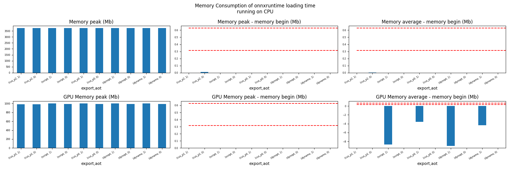
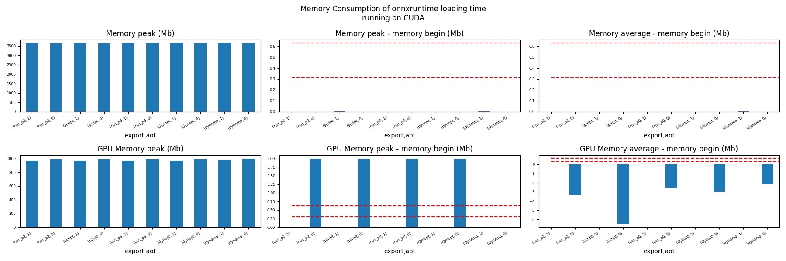
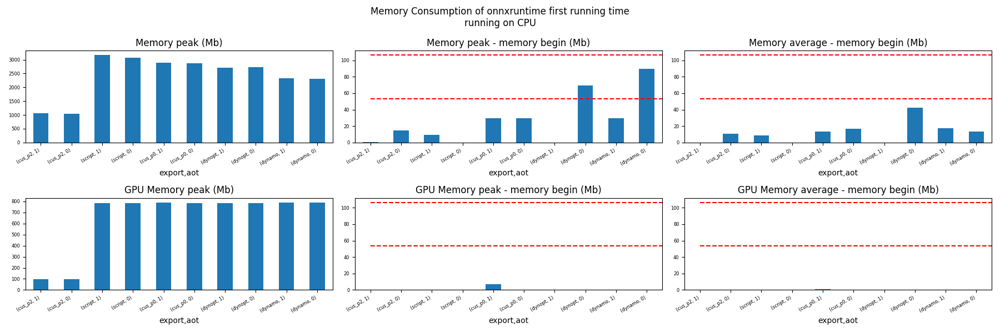
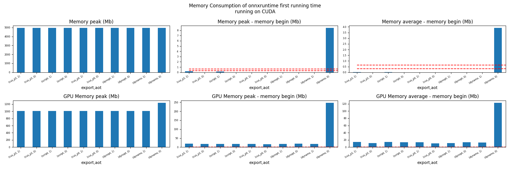
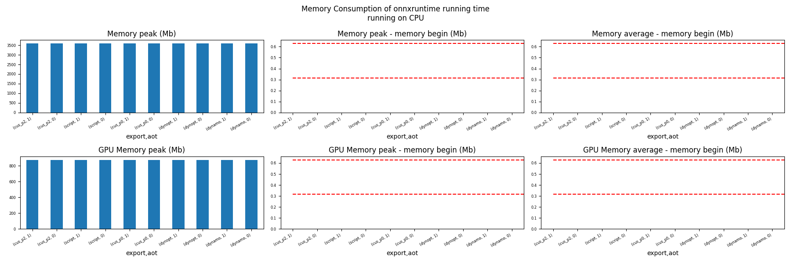
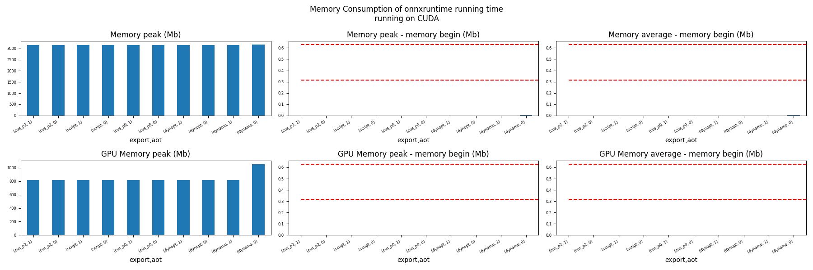

Note
Go to the end to download the full example code
Evaluate different ways to export a torch model to ONNX#
The example evaluates the performance of onnxruntime of a simple torch model after it was converted into ONNX through different processes:
TorchScript-based ONNX Exporter, let’s call it script
TorchDynamo-based ONNX Exporter, let’s call it dynamo
if available, the previous model but optimized, dynopt
a custom exporter cus_p0, this exporter supports a very limited set of models, as dynamo, it relies on torch.fx but the design is closer to what tensorflow-onnx does.
the same exporter but unused nodes were removed and constants were folded, cus_p2
To run the script:
python _doc/examples/plot_torch_export --help
The script takes around 12 minutes with a larger models.
Some helpers#
import contextlib
import itertools
import os
import platform
import pprint
import multiprocessing
import time
import cProfile
import pstats
import io
import warnings
import logging
from pstats import SortKey
try:
with warnings.catch_warnings():
warnings.simplefilter("ignore")
import onnxruntime
has_cuda = "CUDAExecutionProvider" in onnxruntime.get_available_providers()
except ImportError:
print("onnxruntime not available.")
import sys
sys.exit(0)
import numpy as np
import matplotlib.pyplot as plt
import pandas
import onnx
from onnx_array_api.plotting.text_plot import onnx_simple_text_plot
from onnx_array_api.profiling import profile2graph
import torch
from torch import nn
import torch.nn.functional as F
import experimental_experiment
from experimental_experiment.torch_exp.onnx_export import to_onnx
from experimental_experiment.plotting.memory import memory_peak_plot
from experimental_experiment.ext_test_case import (
get_parsed_args,
measure_time,
get_figure,
)
from experimental_experiment.memory_peak import start_spying_on
from tqdm import tqdm
has_cuda = has_cuda and torch.cuda.is_available()
logging.disable(logging.ERROR)
def system_info():
obs = {}
obs["processor"] = platform.processor()
obs["cores"] = multiprocessing.cpu_count()
try:
obs["cuda"] = 1 if torch.cuda.is_available() else 0
obs["cuda_count"] = torch.cuda.device_count()
obs["cuda_name"] = torch.cuda.get_device_name()
obs["cuda_capa"] = torch.cuda.get_device_capability()
except (RuntimeError, AssertionError):
# no cuda
pass
return obs
pprint.pprint(system_info())
{'cores': 8,
'cuda': 1,
'cuda_capa': (6, 1),
'cuda_count': 1,
'cuda_name': 'NVIDIA GeForce GTX 1060',
'processor': 'x86_64'}
Scripts arguments
script_args = get_parsed_args(
"plot_torch_export",
description=__doc__,
scenarios={
"small": "small model to test",
"middle": "55Mb model",
"large": "1Gb model",
},
warmup=5,
repeat=5,
maxtime=(
2,
"maximum time to run a model to measure the computation time, "
"it is 0.1 when scenario is small",
),
expose="scenarios,repeat,warmup",
)
if script_args.scenario in (None, "small"):
script_args.maxtime = 0.1
print(f"scenario={script_args.scenario or 'small'}")
print(f"warmup={script_args.warmup}")
print(f"repeat={script_args.repeat}")
print(f"maxtime={script_args.maxtime}")
scenario=small
warmup=5
repeat=5
maxtime=0.1
The model#
A simple model to convert.
class MyModelClass(nn.Module):
def __init__(self, scenario=script_args.scenario):
super(MyModelClass, self).__init__()
if scenario == "middle":
self.large = False
self.conv1 = nn.Conv2d(1, 128, 5)
self.conv2 = nn.Conv2d(128, 16, 5)
self.fc1 = nn.Linear(13456, 1024)
self.fcs = []
self.fc2 = nn.Linear(1024, 128)
self.fc3 = nn.Linear(128, 10)
elif scenario in (None, "small"):
self.large = False
self.conv1 = nn.Conv2d(1, 16, 5)
self.conv2 = nn.Conv2d(16, 16, 5)
self.fc1 = nn.Linear(16, 512)
self.fcs = []
self.fc2 = nn.Linear(512, 128)
self.fc3 = nn.Linear(128, 10)
elif scenario in (None, "large"):
self.large = True
self.conv1 = nn.Conv2d(1, 128, 5)
self.conv2 = nn.Conv2d(128, 16, 5)
self.fc1 = nn.Linear(13456, 4096)
# torch script does not support loops.
self.fca = nn.Linear(4096, 4096)
self.fcb = nn.Linear(4096, 4096)
self.fcc = nn.Linear(4096, 4096)
self.fcd = nn.Linear(4096, 4096)
self.fce = nn.Linear(4096, 4096)
self.fcf = nn.Linear(4096, 4096)
self.fcg = nn.Linear(4096, 4096)
self.fch = nn.Linear(4096, 4096)
self.fci = nn.Linear(4096, 4096)
self.fck = nn.Linear(4096, 4096)
self.fcl = nn.Linear(4096, 4096)
self.fcm = nn.Linear(4096, 4096)
self.fcn = nn.Linear(4096, 4096)
# end of the unfolded loop.
self.fc2 = nn.Linear(4096, 128)
self.fc3 = nn.Linear(128, 10)
else:
raise ValueError(f"Unsupported scenario={scenario!r}.")
def forward(self, x):
x = F.max_pool2d(F.relu(self.conv1(x)), (2, 2))
x = F.max_pool2d(F.relu(self.conv2(x)), 2)
x = torch.flatten(x, 1)
x = F.relu(self.fc1(x))
if self.large:
# loop
x = F.relu(self.fca(x))
x = F.relu(self.fcb(x))
x = F.relu(self.fcc(x))
x = F.relu(self.fcd(x))
x = F.relu(self.fce(x))
x = F.relu(self.fcf(x))
x = F.relu(self.fcg(x))
x = F.relu(self.fch(x))
x = F.relu(self.fci(x))
x = F.relu(self.fck(x))
x = F.relu(self.fcl(x))
x = F.relu(self.fcm(x))
x = F.relu(self.fcn(x))
# end of the loop
x = F.relu(self.fc2(x))
x = self.fc3(x)
return x
def create_model_and_input(scenario=script_args.scenario):
if scenario == "middle":
shape = [1, 1, 128, 128]
elif scenario in (None, "small"):
shape = [1, 1, 16, 16]
elif scenario == "large":
shape = [1, 1, 128, 128]
else:
raise ValueError(f"Unsupported scenario={scenario!r}.")
input_tensor = torch.rand(*shape).to(torch.float32)
model = MyModelClass(scenario=scenario)
assert model(input_tensor) is not None
return model, input_tensor
def torch_model_size(model):
size_model = 0
for param in model.parameters():
size = param.numel() * torch.finfo(param.data.dtype).bits / 8
size_model += size
return size_model
model, input_tensor = create_model_and_input()
model_size = torch_model_size(model)
print(f"model size={model_size / 2 ** 20} Mb")
model size=0.31467437744140625 Mb
The exporters#
def export_script(filename, model, *args):
with contextlib.redirect_stdout(io.StringIO()):
with warnings.catch_warnings():
warnings.simplefilter("ignore")
torch.onnx.export(model, *args, filename, input_names=["input"])
def export_dynamo(filename, model, *args):
with contextlib.redirect_stdout(io.StringIO()):
with warnings.catch_warnings():
warnings.simplefilter("ignore")
export_output = torch.onnx.dynamo_export(model, *args)
export_output.save(filename)
def export_dynopt(filename, model, *args):
with contextlib.redirect_stdout(io.StringIO()):
with warnings.catch_warnings():
warnings.simplefilter("ignore")
export_output = torch.onnx.dynamo_export(model, *args)
model_onnx = export_output.model_proto
from onnxrewriter.optimizer import optimize
optimized_model = optimize(model_onnx)
with open(filename, "wb") as f:
f.write(optimized_model.SerializeToString())
def export_cus_p0(filename, model, *args):
onx = to_onnx(model, tuple(args), input_names=["input"])
with open(filename, "wb") as f:
f.write(onx.SerializeToString())
def export_cus_p2(filename, model, *args):
onx = to_onnx(
model,
tuple(args),
input_names=["input"],
remove_unused=True,
constant_folding=True,
)
with open(filename, "wb") as f:
f.write(onx.SerializeToString())
Let’s check they are working.
export_functions = [
export_script,
export_dynamo,
export_dynopt,
export_cus_p0,
export_cus_p2,
]
exporters = {f.__name__.replace("export_", ""): f for f in export_functions}
supported_exporters = {}
for k, v in exporters.items():
print(f"run exporter {k}")
filename = f"plot_torch_export_{k}.onnx"
try:
v(filename, model, input_tensor)
except Exception as e:
print(f"skipped due to {str(e)[:1000]}")
continue
supported_exporters[k] = v
print(f"done. size={os.stat(filename).st_size / 2 ** 20:1.0f} Mb")
run exporter script
done. size=0 Mb
run exporter dynamo
done. size=0 Mb
run exporter dynopt
done. size=0 Mb
run exporter cus_p0
done. size=0 Mb
run exporter cus_p2
done. size=0 Mb
Exporter memory#
def flatten(ps):
obs = ps["cpu"].to_dict(unit=2**20)
if "gpus" in ps:
for i, g in enumerate(ps["gpus"]):
for k, v in g.to_dict(unit=2**20).items():
obs[f"gpu{i}_{k}"] = v
return obs
data = []
for k, v in supported_exporters.items():
print(f"run exporter for memory {k}")
filename = f"plot_torch_export_{k}.onnx"
if has_cuda:
torch.cuda.set_device(0)
stat = start_spying_on(cuda=1 if has_cuda else 0)
v(filename, model, input_tensor)
obs = flatten(stat.stop())
print("done.")
onx = onnx.load(filename)
obs.update(dict(nodes=len(onx.graph.node), export=k))
data.append(obs)
stat = start_spying_on(cuda=1 if has_cuda else 0)
exported_mod = torch.export.export(model, (input_tensor,))
obs = flatten(stat.stop())
obs.update(dict(export="torch.fx"))
data.append(obs)
run exporter for memory script
done.
run exporter for memory dynamo
done.
run exporter for memory dynopt
done.
run exporter for memory cus_p0
done.
run exporter for memory cus_p2
done.
The result.
df1 = pandas.DataFrame(data)
df1.to_csv("plot_torch_export_memory.csv", index=False)
df1.to_excel("plot_torch_export_memory.xlsx", index=False)
print(df1)
ax = memory_peak_plot(
data,
bars=[model_size * i / 2**20 for i in range(1, 5)],
suptitle=f"Memory Consumption of the Export\n"
f"model size={model_size / 2**20:1.0f} Mb",
)
get_figure(ax).savefig("plot_torch_export_memory.png")
peak mean n begin end gpu0_peak gpu0_mean gpu0_n gpu0_begin gpu0_end nodes export
0 3728.199219 3728.199219 0.000010 3728.199219 3728.199219 984.269531 984.269531 0.000010 984.269531 984.269531 12.0 script
1 3728.207031 3728.199633 0.000063 3728.199219 3728.207031 984.269531 984.269531 0.000063 984.269531 984.269531 13.0 dynamo
2 3728.207031 3728.207031 0.000067 3728.207031 3728.207031 984.269531 984.269531 0.000067 984.269531 984.269531 18.0 dynopt
3 3728.207031 3728.207031 0.000024 3728.207031 3728.207031 984.269531 984.269531 0.000024 984.269531 984.269531 27.0 cus_p0
4 3728.207031 3728.207031 0.000043 3728.207031 3728.207031 984.269531 984.269531 0.000043 984.269531 984.269531 12.0 cus_p2
5 3728.207031 3728.207031 0.000031 3728.207031 3728.207031 984.269531 984.269531 0.000031 984.269531 984.269531 NaN torch.fx
Exporter speed#
data = []
for k, v in supported_exporters.items():
print(f"run exporter {k}")
filename = f"plot_torch_export_{k}.onnx"
times = []
for i in range(script_args.repeat):
begin = time.perf_counter()
v(filename, model, input_tensor)
duration = time.perf_counter() - begin
times.append(duration)
onx = onnx.load(filename)
print("done.")
data.append(
dict(
export=k,
time=np.mean(times),
min=min(times),
max=max(times),
first=times[0],
last=times[-1],
std=np.std(times),
nodes=len(onx.graph.node),
)
)
run exporter script
done.
run exporter dynamo
done.
run exporter dynopt
done.
run exporter cus_p0
done.
run exporter cus_p2
done.
The last export to measure time torch spends in export the model before any other export can begin the translation except the first one.
times = []
for i in range(script_args.repeat):
begin = time.perf_counter()
exported_mod = torch.export.export(model, (input_tensor,))
duration = time.perf_counter() - begin
times.append(duration)
data.append(
dict(
export="torch.fx",
time=np.mean(times),
min=min(times),
max=max(times),
first=times[0],
last=times[-1],
std=np.std(times),
nodes=len(onx.graph.node),
)
)
The result.
df1 = pandas.DataFrame(data)
df1.to_csv("plot_torch_export_time.csv", index=False)
df1.to_excel("plot_torch_export_time.xlsx", index=False)
print(df1)
fig, ax = plt.subplots(1, 1)
dfi = df1[["export", "time", "std"]].set_index("export")
dfi["time"].plot.bar(ax=ax, title="Export time", yerr=dfi["std"], rot=30)
fig.tight_layout()
fig.savefig("plot_torch_export_time.png")
export time min max first last std nodes
0 script 0.043826 0.034911 0.061668 0.041611 0.042541 0.009315 12
1 dynamo 0.324323 0.238573 0.439018 0.439018 0.284752 0.081903 13
2 dynopt 0.307889 0.251902 0.380487 0.308732 0.345197 0.050590 18
3 cus_p0 0.189537 0.157861 0.233842 0.184611 0.157861 0.026011 27
4 cus_p2 0.219632 0.157266 0.319458 0.157266 0.319458 0.062663 12
5 torch.fx 0.175527 0.144281 0.209335 0.209335 0.151836 0.024108 12
Exporter Profiling#
def clean_text(text):
pathes = [
os.path.abspath(
os.path.normpath(os.path.join(os.path.dirname(torch.__file__), ".."))
),
os.path.abspath(
os.path.normpath(os.path.join(os.path.dirname(onnx.__file__), ".."))
),
os.path.abspath(
os.path.normpath(
os.path.join(os.path.dirname(experimental_experiment.__file__), "..")
)
),
]
for p in pathes:
text = text.replace(p, "")
text = text.replace("experimental_experiment", "experimental_experiment".upper())
return text
def profile_function(name, export_function, verbose=False):
print(f"profile {name}: {export_function}")
pr = cProfile.Profile()
pr.enable()
for i in range(script_args.repeat):
export_function("dummyc.onnx", model, input_tensor)
pr.disable()
s = io.StringIO()
sortby = SortKey.CUMULATIVE
ps = pstats.Stats(pr, stream=s).sort_stats(sortby)
ps.print_stats()
raw = s.getvalue()
text = "\n".join(raw.split("\n")[:200])
if verbose:
print(text)
with open(f"plot_torch_export_profile_{name}.txt", "w") as f:
f.write(raw)
root, nodes = profile2graph(ps, clean_text=clean_text)
text = root.to_text()
with open(f"plot_torch_export_profile_{name}_h.txt", "w") as f:
f.write(text)
print("done.")
profile_function("custom0", export_cus_p0, True)
profile_function("custom2", export_cus_p2)
profile custom0: <function export_cus_p0 at 0x7ff09c4d7d00>
1063560 function calls (1009990 primitive calls) in 2.493 seconds
Ordered by: cumulative time
ncalls tottime percall cumtime percall filename:lineno(function)
5 0.000 0.000 2.548 0.510 /home/xadupre/github/experimental-experiment/_doc/examples/plot_torch_export.py:267(export_cus_p0)
5 0.000 0.000 2.545 0.509 /home/xadupre/github/experimental-experiment/experimental_experiment/torch_exp/onnx_export.py:103(to_onnx)
5 0.000 0.000 2.478 0.496 /home/xadupre/github/experimental-experiment/experimental_experiment/torch_exp/onnx_export.py:44(_make_builder_interpreter)
5 0.000 0.000 2.477 0.495 /home/xadupre/.local/lib/python3.10/site-packages/torch/export/__init__.py:75(export)
5 0.000 0.000 2.477 0.495 /home/xadupre/.local/lib/python3.10/site-packages/torch/export/exported_program.py:78(wrapper)
5 0.002 0.000 2.477 0.495 /home/xadupre/.local/lib/python3.10/site-packages/torch/export/_trace.py:501(_export)
15/10 0.001 0.000 2.104 0.210 /home/xadupre/.local/lib/python3.10/site-packages/torch/_dynamo/utils.py:241(time_wrapper)
20/10 0.000 0.000 1.767 0.177 /home/xadupre/.local/lib/python3.10/site-packages/torch/_dynamo/eval_frame.py:430(_fn)
5 0.001 0.000 1.310 0.262 /home/xadupre/.local/lib/python3.10/site-packages/torch/export/_trace.py:383(_export_non_strict)
5 0.000 0.000 1.297 0.259 /home/xadupre/.local/lib/python3.10/site-packages/torch/export/_trace.py:804(_aot_export_strict)
120/55 0.001 0.000 1.257 0.023 /home/xadupre/.local/lib/python3.10/site-packages/torch/nn/modules/module.py:1507(_wrapped_call_impl)
120/55 0.001 0.000 1.257 0.023 /home/xadupre/.local/lib/python3.10/site-packages/torch/nn/modules/module.py:1513(_call_impl)
5 0.000 0.000 1.244 0.249 /home/xadupre/.local/lib/python3.10/site-packages/torch/_functorch/aot_autograd.py:915(aot_export_module)
5 0.000 0.000 1.240 0.248 /home/xadupre/.local/lib/python3.10/site-packages/torch/_functorch/aot_autograd.py:1169(_aot_export_function)
5 0.001 0.000 1.237 0.247 /home/xadupre/.local/lib/python3.10/site-packages/torch/_functorch/aot_autograd.py:387(create_aot_dispatcher_function)
5 0.000 0.000 1.076 0.215 /home/xadupre/.local/lib/python3.10/site-packages/torch/export/_trace.py:243(_export_to_torch_ir)
5 0.001 0.000 1.075 0.215 /home/xadupre/.local/lib/python3.10/site-packages/torch/_dynamo/eval_frame.py:1237(inner)
15/10 0.000 0.000 0.895 0.089 /home/xadupre/.local/lib/python3.10/site-packages/torch/_dynamo/external_utils.py:23(inner)
5 0.000 0.000 0.871 0.174 /home/xadupre/.local/lib/python3.10/site-packages/torch/_dynamo/eval_frame.py:566(catch_errors)
5 0.000 0.000 0.870 0.174 /home/xadupre/.local/lib/python3.10/site-packages/torch/_dynamo/convert_frame.py:278(_convert_frame_assert)
10/5 0.000 0.000 0.868 0.174 /usr/lib/python3.10/contextlib.py:76(inner)
5 0.001 0.000 0.868 0.174 /home/xadupre/.local/lib/python3.10/site-packages/torch/_dynamo/convert_frame.py:439(_compile)
5 0.000 0.000 0.864 0.173 /home/xadupre/.local/lib/python3.10/site-packages/torch/_dynamo/convert_frame.py:520(compile_inner)
940 0.050 0.000 0.860 0.001 /home/xadupre/.local/lib/python3.10/site-packages/torch/_subclasses/functional_tensor.py:247(__torch_dispatch__)
5 0.000 0.000 0.859 0.172 /home/xadupre/.local/lib/python3.10/site-packages/torch/_functorch/_aot_autograd/runtime_wrappers.py:401(aot_wrapper_dedupe)
5 0.000 0.000 0.858 0.172 /home/xadupre/.local/lib/python3.10/site-packages/torch/_functorch/_aot_autograd/runtime_wrappers.py:620(aot_wrapper_synthetic_base)
5 0.000 0.000 0.857 0.171 /home/xadupre/.local/lib/python3.10/site-packages/torch/_functorch/_aot_autograd/dispatch_and_compile_graph.py:50(aot_dispatch_base_graph)
2660 0.011 0.000 0.824 0.000 /home/xadupre/.local/lib/python3.10/site-packages/torch/export/_safeguard.py:17(__torch_function__)
5 0.000 0.000 0.804 0.161 /home/xadupre/.local/lib/python3.10/site-packages/torch/_functorch/_aot_autograd/dispatch_and_compile_graph.py:34(_create_graph)
5 0.001 0.000 0.803 0.161 /home/xadupre/.local/lib/python3.10/site-packages/torch/fx/experimental/proxy_tensor.py:1084(wrapped)
5 0.000 0.000 0.796 0.159 /home/xadupre/.local/lib/python3.10/site-packages/torch/_compile.py:20(inner)
5 0.000 0.000 0.794 0.159 /home/xadupre/.local/lib/python3.10/site-packages/torch/fx/experimental/proxy_tensor.py:629(dispatch_trace)
5 0.000 0.000 0.757 0.151 /home/xadupre/.local/lib/python3.10/site-packages/torch/fx/experimental/proxy_tensor.py:994(trace)
5 0.000 0.000 0.757 0.151 /home/xadupre/.local/lib/python3.10/site-packages/torch/fx/_symbolic_trace.py:663(trace)
5 0.000 0.000 0.724 0.145 /home/xadupre/.local/lib/python3.10/site-packages/torch/fx/experimental/proxy_tensor.py:652(wrapped)
2830/1980 0.010 0.000 0.664 0.000 /home/xadupre/.local/lib/python3.10/site-packages/torch/utils/_stats.py:15(wrapper)
15 0.003 0.000 0.643 0.043 /home/xadupre/.local/lib/python3.10/site-packages/torch/fx/interpreter.py:106(run)
10 0.000 0.000 0.632 0.063 /home/xadupre/.local/lib/python3.10/site-packages/torch/_functorch/_aot_autograd/utils.py:155(flat_fn)
210 0.003 0.000 0.631 0.003 /home/xadupre/.local/lib/python3.10/site-packages/torch/fx/interpreter.py:184(run_node)
10 0.001 0.000 0.630 0.063 /home/xadupre/.local/lib/python3.10/site-packages/torch/_functorch/_aot_autograd/traced_function_transforms.py:608(functional_call)
5 0.000 0.000 0.602 0.120 /home/xadupre/.local/lib/python3.10/site-packages/torch/_functorch/_aot_autograd/traced_function_transforms.py:347(_functionalized_f_helper)
140 0.001 0.000 0.602 0.004 /home/xadupre/.local/lib/python3.10/site-packages/torch/_functorch/_aot_autograd/traced_function_transforms.py:590(run_node)
5 0.000 0.000 0.584 0.117 /home/xadupre/.local/lib/python3.10/site-packages/torch/_dynamo/bytecode_transformation.py:1025(transform_code_object)
5 0.000 0.000 0.560 0.112 /home/xadupre/.local/lib/python3.10/site-packages/torch/_dynamo/convert_frame.py:140(_fn)
5 0.000 0.000 0.557 0.111 /home/xadupre/.local/lib/python3.10/site-packages/torch/_dynamo/convert_frame.py:473(transform)
5 0.000 0.000 0.494 0.099 /home/xadupre/.local/lib/python3.10/site-packages/torch/_dynamo/symbolic_convert.py:2124(run)
5 0.001 0.000 0.494 0.099 /home/xadupre/.local/lib/python3.10/site-packages/torch/_dynamo/symbolic_convert.py:780(run)
280 0.005 0.000 0.492 0.002 /home/xadupre/.local/lib/python3.10/site-packages/torch/_dynamo/symbolic_convert.py:678(step)
2335/1275 0.012 0.000 0.475 0.000 /home/xadupre/.local/lib/python3.10/site-packages/torch/utils/_pytree.py:857(tree_map)
5 0.000 0.000 0.473 0.095 /home/xadupre/.local/lib/python3.10/site-packages/torch/_functorch/_aot_autograd/traced_function_transforms.py:66(inner_fn)
2135 0.009 0.000 0.407 0.000 /home/xadupre/.local/lib/python3.10/site-packages/torch/_subclasses/fake_tensor.py:864(__torch_dispatch__)
2135 0.016 0.000 0.394 0.000 /home/xadupre/.local/lib/python3.10/site-packages/torch/_subclasses/fake_tensor.py:1185(dispatch)
8720/1410 0.052 0.000 0.359 0.000 /home/xadupre/.local/lib/python3.10/site-packages/torch/utils/_pytree.py:732(unflatten)
905 0.010 0.000 0.354 0.000 /home/xadupre/.local/lib/python3.10/site-packages/torch/_subclasses/fake_tensor.py:918(_cached_dispatch_impl)
2190 0.010 0.000 0.346 0.000 /home/xadupre/.local/lib/python3.10/site-packages/torch/utils/_pytree.py:1032(tree_map_only)
60 0.001 0.000 0.339 0.006 /home/xadupre/.local/lib/python3.10/site-packages/torch/_dynamo/symbolic_convert.py:459(wrapper)
60 0.000 0.000 0.337 0.006 /home/xadupre/.local/lib/python3.10/site-packages/torch/_dynamo/symbolic_convert.py:1192(CALL_FUNCTION)
60 0.001 0.000 0.335 0.006 /home/xadupre/.local/lib/python3.10/site-packages/torch/_dynamo/symbolic_convert.py:631(call_function)
545 0.006 0.000 0.332 0.001 /home/xadupre/.local/lib/python3.10/site-packages/torch/fx/experimental/proxy_tensor.py:741(__torch_dispatch__)
545 0.002 0.000 0.308 0.001 /home/xadupre/.local/lib/python3.10/site-packages/torch/fx/experimental/proxy_tensor.py:772(inner_torch_dispatch)
5 0.002 0.000 0.305 0.061 /home/xadupre/.local/lib/python3.10/site-packages/torch/_functorch/_aot_autograd/collect_metadata_analysis.py:92(inner)
65 0.000 0.000 0.301 0.005 /home/xadupre/.local/lib/python3.10/site-packages/torch/_dynamo/variables/builder.py:1278(wrap_fx_proxy)
65 0.004 0.000 0.301 0.005 /home/xadupre/.local/lib/python3.10/site-packages/torch/_dynamo/variables/builder.py:1338(wrap_fx_proxy_cls)
50 0.000 0.000 0.294 0.006 /home/xadupre/.local/lib/python3.10/site-packages/torch/fx/interpreter.py:298(call_module)
70 0.000 0.000 0.290 0.004 /home/xadupre/.local/lib/python3.10/site-packages/torch/fx/interpreter.py:256(call_function)
75 0.007 0.000 0.285 0.004 /home/xadupre/.local/lib/python3.10/site-packages/torch/fx/experimental/proxy_tensor.py:406(proxy_call)
5 0.001 0.000 0.278 0.056 /home/xadupre/.local/lib/python3.10/site-packages/torch/_dynamo/guards.py:947(__init__)
110 0.001 0.000 0.241 0.002 /home/xadupre/.local/lib/python3.10/site-packages/torch/_functorch/_aot_autograd/functional_utils.py:23(to_fun)
5 0.001 0.000 0.241 0.048 /home/xadupre/.local/lib/python3.10/site-packages/torch/_dynamo/guards.py:1022(compile_check_fn)
60 0.003 0.000 0.241 0.004 /home/xadupre/.local/lib/python3.10/site-packages/torch/_dynamo/utils.py:1553(get_fake_value)
110 0.002 0.000 0.240 0.002 /home/xadupre/.local/lib/python3.10/site-packages/torch/_subclasses/functional_tensor.py:172(to_functional)
50 0.001 0.000 0.230 0.005 /home/xadupre/.local/lib/python3.10/site-packages/torch/fx/_symbolic_trace.py:455(call_module)
60 0.001 0.000 0.226 0.004 /home/xadupre/.local/lib/python3.10/site-packages/torch/overrides.py:1571(handle_torch_function)
90 0.000 0.000 0.223 0.002 /home/xadupre/.local/lib/python3.10/site-packages/torch/_dynamo/utils.py:1138(wrap_fake_exception)
25 0.000 0.000 0.221 0.009 /home/xadupre/.local/lib/python3.10/site-packages/torch/fx/_symbolic_trace.py:761(module_call_wrapper)
25 0.000 0.000 0.219 0.009 /home/xadupre/.local/lib/python3.10/site-packages/torch/fx/experimental/proxy_tensor.py:1043(call_module)
25 0.001 0.000 0.218 0.009 /home/xadupre/.local/lib/python3.10/site-packages/torch/_dynamo/variables/nn_module.py:242(call_function)
25 0.000 0.000 0.216 0.009 /home/xadupre/.local/lib/python3.10/site-packages/torch/fx/_symbolic_trace.py:763(forward)
380/275 0.010 0.000 0.213 0.001 {method 'detach' of 'torch._C.TensorBase' objects}
45 0.001 0.000 0.201 0.004 /home/xadupre/.local/lib/python3.10/site-packages/torch/fx/graph_module.py:707(recompile)
2525 0.005 0.000 0.200 0.000 /home/xadupre/.local/lib/python3.10/site-packages/torch/utils/_pytree.py:797(tree_flatten)
50 0.001 0.000 0.196 0.004 /home/xadupre/.local/lib/python3.10/site-packages/torch/fx/graph.py:1279(python_code)
60 0.001 0.000 0.196 0.003 /home/xadupre/.local/lib/python3.10/site-packages/torch/nn/modules/linear.py:115(forward)
8995/2525 0.040 0.000 0.195 0.000 /home/xadupre/.local/lib/python3.10/site-packages/torch/utils/_pytree.py:776(_tree_flatten_helper)
80 0.000 0.000 0.195 0.002 /home/xadupre/.local/lib/python3.10/site-packages/torch/fx/experimental/proxy_tensor.py:305(track_tensor_tree)
90/60 0.011 0.000 0.195 0.003 {built-in method torch._C._nn.linear}
155/80 0.001 0.000 0.194 0.002 /home/xadupre/.local/lib/python3.10/site-packages/torch/fx/experimental/proxy_tensor.py:306(wrap_with_proxy)
2150/1420 0.004 0.000 0.188 0.000 /home/xadupre/.local/lib/python3.10/site-packages/torch/_ops.py:568(__call__)
50 0.001 0.000 0.181 0.004 /home/xadupre/.local/lib/python3.10/site-packages/torch/fx/graph.py:1341(_python_code)
50 0.017 0.000 0.180 0.004 /home/xadupre/.local/lib/python3.10/site-packages/torch/fx/graph.py:370(_gen_python_code)
150 0.001 0.000 0.165 0.001 /home/xadupre/.local/lib/python3.10/site-packages/torch/fx/experimental/proxy_tensor.py:241(set_meta)
60/40 0.000 0.000 0.161 0.004 /home/xadupre/.local/lib/python3.10/site-packages/torch/_jit_internal.py:489(fn)
60/40 0.001 0.000 0.160 0.004 /home/xadupre/.local/lib/python3.10/site-packages/torch/nn/functional.py:774(_max_pool2d)
40 0.006 0.000 0.157 0.004 {built-in method torch.max_pool2d}
170/150 0.001 0.000 0.156 0.001 /home/xadupre/.local/lib/python3.10/site-packages/torch/fx/experimental/proxy_tensor.py:210(extract_val)
160 0.000 0.000 0.155 0.001 /home/xadupre/.local/lib/python3.10/site-packages/torch/fx/experimental/proxy_tensor.py:207(snapshot_fake)
25 0.000 0.000 0.146 0.006 /home/xadupre/.local/lib/python3.10/site-packages/torch/_dynamo/utils.py:1149(deepcopy_to_fake_tensor)
545/170 0.003 0.000 0.146 0.001 /usr/lib/python3.10/copy.py:259(_reconstruct)
25 0.000 0.000 0.145 0.006 /home/xadupre/.local/lib/python3.10/site-packages/torch/_dynamo/utils.py:1151(<lambda>)
1475/30 0.010 0.000 0.145 0.005 /usr/lib/python3.10/copy.py:128(deepcopy)
25 0.002 0.000 0.142 0.006 /usr/lib/python3.10/copy.py:227(_deepcopy_dict)
5 0.001 0.000 0.140 0.028 /home/xadupre/.local/lib/python3.10/site-packages/torch/_dynamo/guards.py:1225(build_guard_function)
4735/1665 0.012 0.000 0.133 0.000 /home/xadupre/.local/lib/python3.10/site-packages/torch/utils/_pytree.py:790(<listcomp>)
905 0.025 0.000 0.133 0.000 /home/xadupre/.local/lib/python3.10/site-packages/torch/_subclasses/fake_tensor.py:953(_cache_key)
40 0.000 0.000 0.130 0.003 /home/xadupre/.local/lib/python3.10/site-packages/torch/nn/modules/conv.py:459(forward)
40 0.000 0.000 0.130 0.003 /home/xadupre/.local/lib/python3.10/site-packages/torch/nn/modules/conv.py:451(_conv_forward)
60/40 0.008 0.000 0.129 0.003 {built-in method torch.conv2d}
120/80 0.001 0.000 0.129 0.002 /home/xadupre/.local/lib/python3.10/site-packages/torch/nn/functional.py:1489(relu)
80 0.005 0.000 0.126 0.002 {built-in method torch.relu}
160010/157665 0.106 0.000 0.124 0.000 {built-in method builtins.isinstance}
50 0.002 0.000 0.121 0.002 /home/xadupre/.local/lib/python3.10/site-packages/torch/nn/parameter.py:55(__deepcopy__)
250 0.002 0.000 0.116 0.000 /home/xadupre/.local/lib/python3.10/site-packages/torch/_subclasses/fake_tensor.py:1726(__torch_function__)
55 0.001 0.000 0.116 0.002 /home/xadupre/.local/lib/python3.10/site-packages/torch/_functorch/_aot_autograd/collect_metadata_analysis.py:82(_to_fun)
275 0.003 0.000 0.115 0.000 /home/xadupre/.local/lib/python3.10/site-packages/torch/fx/proxy.py:173(create_proxy)
225 0.001 0.000 0.114 0.001 /home/xadupre/.local/lib/python3.10/site-packages/torch/_subclasses/fake_tensor.py:318(__call__)
35 0.003 0.000 0.114 0.003 /home/xadupre/.local/lib/python3.10/site-packages/torch/_dynamo/variables/torch.py:255(call_function)
225 0.002 0.000 0.113 0.001 /home/xadupre/.local/lib/python3.10/site-packages/torch/_subclasses/fake_tensor.py:240(from_real_tensor)
5000 0.015 0.000 0.111 0.000 /home/xadupre/.local/lib/python3.10/site-packages/torch/fx/node.py:698(map_arg)
5300/315 0.012 0.000 0.110 0.000 /usr/lib/python3.10/ast.py:414(visit)
135 0.006 0.000 0.109 0.001 /home/xadupre/.local/lib/python3.10/site-packages/torch/_subclasses/fake_tensor.py:1211(_dispatch_impl)
165 0.005 0.000 0.104 0.001 /home/xadupre/.local/lib/python3.10/site-packages/torch/_subclasses/meta_utils.py:627(__call__)
5 0.000 0.000 0.101 0.020 /home/xadupre/.local/lib/python3.10/site-packages/torch/_dynamo/eval_frame.py:1295(result_capturing_wrapper)
165 0.013 0.000 0.099 0.001 /home/xadupre/.local/lib/python3.10/site-packages/torch/_subclasses/meta_utils.py:186(meta_tensor)
135 0.002 0.000 0.097 0.001 /home/xadupre/.local/lib/python3.10/site-packages/torch/_dynamo/guards.py:1033(add_code_part)
20 0.002 0.000 0.096 0.005 {built-in method }
110 0.001 0.000 0.096 0.001 /home/xadupre/.local/lib/python3.10/site-packages/torch/_dynamo/variables/builder.py:243(__call__)
110 0.008 0.000 0.094 0.001 /home/xadupre/.local/lib/python3.10/site-packages/torch/_dynamo/variables/builder.py:365(_wrap)
8435/7735 0.014 0.000 0.093 0.000 {built-in method builtins.next}
9795/5005 0.044 0.000 0.092 0.000 /home/xadupre/.local/lib/python3.10/site-packages/torch/fx/node.py:706(map_aggregate)
110 0.004 0.000 0.092 0.001 {built-in method torch._to_functional_tensor}
770 0.011 0.000 0.091 0.000 /home/xadupre/.local/lib/python3.10/site-packages/torch/_subclasses/fake_tensor.py:1114(_output_from_cache_entry)
220 0.005 0.000 0.088 0.000 {built-in method torch._mirror_autograd_meta_to}
65 0.001 0.000 0.087 0.001 /home/xadupre/.local/lib/python3.10/site-packages/torch/_dynamo/symbolic_convert.py:1286(LOAD_ATTR)
20 0.001 0.000 0.086 0.004 /home/xadupre/.local/lib/python3.10/site-packages/torch/fx/graph_module.py:353(__init__)
465/415 0.004 0.000 0.086 0.000 /home/xadupre/.local/lib/python3.10/site-packages/torch/nn/modules/module.py:1690(__setattr__)
135 0.002 0.000 0.085 0.001 /home/xadupre/.local/lib/python3.10/site-packages/torch/utils/_traceback.py:170(summary)
20 0.000 0.000 0.079 0.004 /home/xadupre/.local/lib/python3.10/site-packages/torch/fx/graph_module.py:462(graph)
65 0.003 0.000 0.078 0.001 /home/xadupre/.local/lib/python3.10/site-packages/torch/_dynamo/variables/builtin.py:524(call_function)
165 0.001 0.000 0.078 0.000 /home/xadupre/.local/lib/python3.10/site-packages/torch/_subclasses/fake_tensor.py:1607(from_tensor)
285 0.004 0.000 0.076 0.000 /home/xadupre/.local/lib/python3.10/site-packages/torch/fx/proxy.py:117(create_node)
150 0.003 0.000 0.075 0.001 /home/xadupre/.local/lib/python3.10/site-packages/torch/_subclasses/fake_tensor.py:507(__torch_dispatch__)
5 0.000 0.000 0.074 0.015 /home/xadupre/.local/lib/python3.10/site-packages/torch/_dynamo/eval_frame.py:973(rewrite_signature)
135 0.011 0.000 0.073 0.001 /home/xadupre/.local/lib/python3.10/site-packages/torch/utils/_traceback.py:246(_extract_symbolized_tb)
1010 0.010 0.000 0.072 0.000 /home/xadupre/.local/lib/python3.10/site-packages/torch/fx/graph.py:526(emit_node)
280 0.009 0.000 0.071 0.000 /home/xadupre/.local/lib/python3.10/site-packages/torch/_subclasses/functional_tensor.py:78(__new__)
1115/895 0.012 0.000 0.069 0.000 /home/xadupre/.local/lib/python3.10/site-packages/torch/_subclasses/fake_tensor.py:1010(_prep_args_for_hash)
305 0.004 0.000 0.069 0.000 /home/xadupre/.local/lib/python3.10/site-packages/torch/fx/graph.py:876(create_node)
60 0.000 0.000 0.068 0.001 /home/xadupre/.local/lib/python3.10/site-packages/torch/_dynamo/utils.py:1600(<lambda>)
60 0.001 0.000 0.068 0.001 /home/xadupre/.local/lib/python3.10/site-packages/torch/_dynamo/utils.py:1679(run_node)
30/20 0.004 0.000 0.068 0.003 {built-in method torch.flatten}
12720 0.021 0.000 0.068 0.000 /home/xadupre/.local/lib/python3.10/site-packages/torch/utils/_pytree.py:606(_is_leaf)
655 0.002 0.000 0.068 0.000 /home/xadupre/.local/lib/python3.10/site-packages/torch/_dynamo/guards.py:138(_ast_unparse)
18635 0.025 0.000 0.067 0.000 /home/xadupre/.local/lib/python3.10/site-packages/torch/utils/_pytree.py:599(_get_node_type)
5 0.000 0.000 0.067 0.013 /home/xadupre/.local/lib/python3.10/site-packages/torch/_functorch/functional_call.py:10(functional_call)
5 0.000 0.000 0.067 0.013 /home/xadupre/.local/lib/python3.10/site-packages/torch/nn/utils/stateless.py:229(_functional_call)
4740 0.009 0.000 0.066 0.000 <string>:2(__init__)
655 0.002 0.000 0.066 0.000 /usr/lib/python3.10/ast.py:1679(unparse)
10 0.001 0.000 0.065 0.006 /home/xadupre/.local/lib/python3.10/site-packages/torch/_decomp/decompositions_for_rng.py:129(reset)
295/240 0.008 0.000 0.064 0.000 {method 'clone' of 'torch._C.TensorBase' objects}
5 0.000 0.000 0.063 0.013 /home/xadupre/.local/lib/python3.10/site-packages/torch/fx/_lazy_graph_module.py:112(_lazy_forward)
6720 0.011 0.000 0.063 0.000 /usr/lib/python3.10/traceback.py:259(__init__)
105 0.000 0.000 0.063 0.001 /home/xadupre/.local/lib/python3.10/site-packages/torch/_dynamo/guards.py:1232(replace)
655 0.002 0.000 0.063 0.000 /usr/lib/python3.10/ast.py:811(visit)
105 0.001 0.000 0.063 0.001 /home/xadupre/.local/lib/python3.10/site-packages/torch/_dynamo/guards.py:916(replace)
30 0.000 0.000 0.063 0.002 /home/xadupre/.local/lib/python3.10/site-packages/torch/_decomp/decompositions_for_rng.py:71(__init__)
30 0.000 0.000 0.063 0.002 /home/xadupre/.local/lib/python3.10/site-packages/torch/_decomp/decompositions_for_rng.py:74(reset)
120/60 0.005 0.000 0.062 0.001 {built-in method torch.tensor}
5 0.000 0.000 0.062 0.012 /home/xadupre/.local/lib/python3.10/site-packages/torch/_dynamo/symbolic_convert.py:2016(__init__)
3170/655 0.007 0.000 0.061 0.000 /usr/lib/python3.10/ast.py:801(traverse)
3765/3485 0.007 0.000 0.060 0.000 /usr/lib/python3.10/contextlib.py:130(__enter__)
50 0.000 0.000 0.059 0.001 /home/xadupre/.local/lib/python3.10/site-packages/torch/nn/parameter.py:34(__new__)
5 0.001 0.000 0.057 0.011 /home/xadupre/.local/lib/python3.10/site-packages/torch/_dynamo/guards.py:907(count)
4740 0.018 0.000 0.057 0.000 /home/xadupre/.local/lib/python3.10/site-packages/torch/utils/_pytree.py:627(__post_init__)
6520/5990 0.008 0.000 0.057 0.000 /home/xadupre/.local/lib/python3.10/site-packages/torch/fx/node.py:712(<genexpr>)
7210 0.016 0.000 0.056 0.000 /usr/lib/python3.10/traceback.py:301(line)
15 0.000 0.000 0.056 0.004 /home/xadupre/.local/lib/python3.10/site-packages/torch/fx/_lazy_graph_module.py:54(_make_graph_module)
5 0.001 0.000 0.055 0.011 /home/xadupre/github/experimental-experiment/experimental_experiment/torch_exp/graph_builder.py:1029(process)
1350/105 0.004 0.000 0.054 0.001 /home/xadupre/.local/lib/python3.10/site-packages/torch/_dynamo/guards.py:854(visit)
5 0.000 0.000 0.053 0.011 /home/xadupre/.local/lib/python3.10/site-packages/torch/_dynamo/eval_frame.py:915(transform)
5 0.000 0.000 0.053 0.011 /home/xadupre/.local/lib/python3.10/site-packages/torch/fx/interpreter.py:500(transform)
1350/105 0.007 0.000 0.053 0.001 /usr/lib/python3.10/ast.py:420(generic_visit)
65 0.003 0.000 0.053 0.001 /home/xadupre/.local/lib/python3.10/site-packages/torch/_dynamo/variables/builtin.py:1186(call_getattr)
145 0.001 0.000 0.052 0.000 /home/xadupre/github/experimental-experiment/experimental_experiment/torch_exp/interpreter.py:26(run_node)
1220/685 0.019 0.000 0.050 0.000 {built-in method torch._ops.prim.}
1010 0.022 0.000 0.050 0.000 /home/xadupre/.local/lib/python3.10/site-packages/torch/_subclasses/fake_tensor.py:673(extract_tensor_metadata)
3765/3485 0.010 0.000 0.048 0.000 /usr/lib/python3.10/contextlib.py:139(__exit__)
5 0.000 0.000 0.048 0.010 /home/xadupre/.local/lib/python3.10/site-packages/torch/fx/graph_module.py:736(call_wrapped)
5 0.000 0.000 0.048 0.010 /home/xadupre/.local/lib/python3.10/site-packages/torch/fx/graph_module.py:299(__call__)
5 0.000 0.000 0.048 0.010 /home/xadupre/.local/lib/python3.10/site-packages/torch/export/exported_program.py:127(__init__)
85 0.002 0.000 0.046 0.001 /home/xadupre/github/experimental-experiment/experimental_experiment/torch_exp/interpreter.py:512(call_function)
960/105 0.003 0.000 0.044 0.000 /home/xadupre/.local/lib/python3.10/site-packages/torch/_dynamo/guards.py:870(visit)
525/340 0.004 0.000 0.044 0.000 /home/xadupre/.local/lib/python3.10/site-packages/torch/_dynamo/variables/base.py:168(apply)
885/105 0.006 0.000 0.043 0.000 /usr/lib/python3.10/ast.py:488(generic_visit)
2190 0.009 0.000 0.041 0.000 /home/xadupre/.local/lib/python3.10/site-packages/torch/utils/_pytree.py:970(map_only)
3320 0.006 0.000 0.041 0.000 /home/xadupre/.local/lib/python3.10/site-packages/torch/utils/_pytree.py:992(wrapped)
done.
profile custom2: <function export_cus_p2 at 0x7ff09c4d7a30>
done.
Same with dynamo-exporter.
profile_function("dynamo", export_dynamo, verbose=True)
if "dynopt" in supported_exporters:
profile_function("dynopt", export_dynopt)
profile dynamo: <function export_dynamo at 0x7ff09c4d76d0>
1746698 function calls (1680673 primitive calls) in 3.647 seconds
Ordered by: cumulative time
ncalls tottime percall cumtime percall filename:lineno(function)
5 0.002 0.000 3.860 0.772 /home/xadupre/github/experimental-experiment/_doc/examples/plot_torch_export.py:245(export_dynamo)
5 0.000 0.000 3.849 0.770 /home/xadupre/.local/lib/python3.10/site-packages/torch/onnx/_internal/exporter.py:1331(dynamo_export)
5 0.000 0.000 2.967 0.593 /home/xadupre/.local/lib/python3.10/site-packages/torch/onnx/_internal/exporter.py:1157(export)
5 0.000 0.000 2.705 0.541 /home/xadupre/.local/lib/python3.10/site-packages/torch/onnx/_internal/fx/dynamo_graph_extractor.py:187(generate_fx)
30/15 0.001 0.000 1.969 0.131 /home/xadupre/.local/lib/python3.10/site-packages/torch/_dynamo/eval_frame.py:430(_fn)
605/35 0.021 0.000 1.844 0.053 /home/xadupre/.local/lib/python3.10/site-packages/torch/onnx/_internal/diagnostics/infra/decorator.py:71(wrapper)
5 0.000 0.000 1.694 0.339 /home/xadupre/.local/lib/python3.10/site-packages/torch/onnx/_internal/fx/dynamo_graph_extractor.py:234(pre_export_passes)
5 0.001 0.000 1.694 0.339 /home/xadupre/.local/lib/python3.10/site-packages/torch/onnx/_internal/exporter.py:1439(common_pre_export_passes)
30 0.001 0.000 1.644 0.055 /home/xadupre/.local/lib/python3.10/site-packages/torch/onnx/_internal/fx/_pass.py:240(run)
25/15 0.000 0.000 1.174 0.078 /home/xadupre/.local/lib/python3.10/site-packages/torch/_dynamo/external_utils.py:23(inner)
3165/1440 0.011 0.000 1.159 0.001 /home/xadupre/.local/lib/python3.10/site-packages/torch/utils/_stats.py:15(wrapper)
20 0.005 0.000 1.156 0.058 /home/xadupre/.local/lib/python3.10/site-packages/torch/fx/interpreter.py:106(run)
490 0.005 0.000 1.099 0.002 /home/xadupre/.local/lib/python3.10/site-packages/torch/fx/interpreter.py:184(run_node)
10 0.001 0.000 1.075 0.107 /home/xadupre/.local/lib/python3.10/site-packages/torch/fx/experimental/proxy_tensor.py:1084(wrapped)
10 0.000 0.000 1.067 0.107 /home/xadupre/.local/lib/python3.10/site-packages/torch/_compile.py:20(inner)
10 0.000 0.000 1.063 0.106 /home/xadupre/.local/lib/python3.10/site-packages/torch/fx/experimental/proxy_tensor.py:629(dispatch_trace)
5 0.000 0.000 1.006 0.201 /home/xadupre/.local/lib/python3.10/site-packages/torch/_dynamo/eval_frame.py:1237(inner)
10 0.001 0.000 0.986 0.099 /home/xadupre/.local/lib/python3.10/site-packages/torch/fx/_symbolic_trace.py:663(trace)
10 0.001 0.000 0.952 0.095 /home/xadupre/.local/lib/python3.10/site-packages/torch/fx/experimental/proxy_tensor.py:652(wrapped)
10 0.000 0.000 0.933 0.093 /home/xadupre/.local/lib/python3.10/site-packages/torch/onnx/_internal/fx/passes/_utils.py:28(wrapped)
5 0.000 0.000 0.905 0.181 /home/xadupre/.local/lib/python3.10/site-packages/torch/onnx/_internal/fx/dynamo_graph_extractor.py:166(wrapped)
5 0.001 0.000 0.880 0.176 /home/xadupre/.local/lib/python3.10/site-packages/torch/onnx/_internal/exporter.py:358(__init__)
575 0.005 0.000 0.857 0.001 /home/xadupre/.local/lib/python3.10/site-packages/torch/fx/experimental/proxy_tensor.py:741(__torch_dispatch__)
575 0.002 0.000 0.833 0.001 /home/xadupre/.local/lib/python3.10/site-packages/torch/fx/experimental/proxy_tensor.py:772(inner_torch_dispatch)
5 0.003 0.001 0.828 0.166 /home/xadupre/.local/lib/python3.10/site-packages/torch/onnx/_internal/fx/decomposition_table.py:80(create_onnx_friendly_decomposition_table)
5 0.153 0.031 0.821 0.164 /home/xadupre/.local/lib/python3.10/site-packages/torch/onnx/_internal/fx/decomposition_table.py:18(_create_onnx_supports_op_overload_table)
190 0.015 0.000 0.814 0.004 /home/xadupre/.local/lib/python3.10/site-packages/torch/fx/experimental/proxy_tensor.py:406(proxy_call)
10 0.001 0.000 0.794 0.079 /home/xadupre/.local/lib/python3.10/site-packages/torch/_dynamo/eval_frame.py:566(catch_errors)
1065/555 0.003 0.000 0.793 0.001 /home/xadupre/.local/lib/python3.10/site-packages/torch/_ops.py:568(__call__)
5 0.000 0.000 0.792 0.158 /home/xadupre/.local/lib/python3.10/site-packages/torch/_dynamo/convert_frame.py:278(_convert_frame_assert)
10/5 0.000 0.000 0.791 0.158 /usr/lib/python3.10/contextlib.py:76(inner)
5 0.001 0.000 0.790 0.158 /home/xadupre/.local/lib/python3.10/site-packages/torch/_dynamo/convert_frame.py:439(_compile)
10/5 0.000 0.000 0.788 0.158 /home/xadupre/.local/lib/python3.10/site-packages/torch/_dynamo/utils.py:241(time_wrapper)
5 0.000 0.000 0.787 0.157 /home/xadupre/.local/lib/python3.10/site-packages/torch/_dynamo/convert_frame.py:520(compile_inner)
265 0.001 0.000 0.766 0.003 /home/xadupre/.local/lib/python3.10/site-packages/torch/fx/interpreter.py:256(call_function)
2440/1780 0.010 0.000 0.638 0.000 /home/xadupre/.local/lib/python3.10/site-packages/torch/_subclasses/fake_tensor.py:864(__torch_dispatch__)
2440/1780 0.020 0.000 0.627 0.000 /home/xadupre/.local/lib/python3.10/site-packages/torch/_subclasses/fake_tensor.py:1185(dispatch)
1385/1025 0.014 0.000 0.592 0.001 /home/xadupre/.local/lib/python3.10/site-packages/torch/_subclasses/fake_tensor.py:918(_cached_dispatch_impl)
5 0.000 0.000 0.584 0.117 /home/xadupre/.local/lib/python3.10/site-packages/torch/onnx/_internal/fx/passes/functionalization.py:101(_run)
5 0.000 0.000 0.566 0.113 /home/xadupre/.local/lib/python3.10/site-packages/torch/onnx/_internal/fx/passes/decomp.py:32(_run)
5 0.000 0.000 0.520 0.104 /home/xadupre/.local/lib/python3.10/site-packages/torch/_dynamo/bytecode_transformation.py:1025(transform_code_object)
5 0.000 0.000 0.498 0.100 /home/xadupre/.local/lib/python3.10/site-packages/torch/_dynamo/convert_frame.py:140(_fn)
5 0.000 0.000 0.496 0.099 /home/xadupre/.local/lib/python3.10/site-packages/torch/_dynamo/convert_frame.py:473(transform)
5 0.000 0.000 0.479 0.096 /home/xadupre/.local/lib/python3.10/site-packages/torch/onnx/_internal/fx/passes/functionalization.py:80(wrapped)
5 0.000 0.000 0.447 0.089 /home/xadupre/.local/lib/python3.10/site-packages/torch/_dynamo/symbolic_convert.py:2124(run)
5 0.001 0.000 0.447 0.089 /home/xadupre/.local/lib/python3.10/site-packages/torch/_dynamo/symbolic_convert.py:780(run)
280 0.004 0.000 0.446 0.002 /home/xadupre/.local/lib/python3.10/site-packages/torch/_dynamo/symbolic_convert.py:678(step)
37060 0.057 0.000 0.400 0.000 /home/xadupre/.local/lib/python3.10/site-packages/torch/onnx/_internal/exporter.py:252(is_registered_op)
37135 0.085 0.000 0.345 0.000 /home/xadupre/.local/lib/python3.10/site-packages/torch/onnx/_internal/exporter.py:229(get_op_functions)
85/55 0.000 0.000 0.344 0.006 /home/xadupre/.local/lib/python3.10/site-packages/torch/nn/modules/module.py:1507(_wrapped_call_impl)
85/55 0.001 0.000 0.343 0.006 /home/xadupre/.local/lib/python3.10/site-packages/torch/nn/modules/module.py:1513(_call_impl)
350/170 0.023 0.000 0.338 0.002 /home/xadupre/.local/lib/python3.10/site-packages/torch/_subclasses/fake_tensor.py:1211(_dispatch_impl)
1580 0.008 0.000 0.322 0.000 /home/xadupre/.local/lib/python3.10/site-packages/torch/utils/_pytree.py:857(tree_map)
60 0.000 0.000 0.310 0.005 /home/xadupre/.local/lib/python3.10/site-packages/torch/_dynamo/symbolic_convert.py:459(wrapper)
60 0.000 0.000 0.308 0.005 /home/xadupre/.local/lib/python3.10/site-packages/torch/_dynamo/symbolic_convert.py:1192(CALL_FUNCTION)
60 0.001 0.000 0.307 0.005 /home/xadupre/.local/lib/python3.10/site-packages/torch/_dynamo/symbolic_convert.py:631(call_function)
70 0.002 0.000 0.273 0.004 /home/xadupre/.local/lib/python3.10/site-packages/torch/fx/graph_module.py:707(recompile)
65 0.000 0.000 0.272 0.004 /home/xadupre/.local/lib/python3.10/site-packages/torch/_dynamo/variables/builder.py:1278(wrap_fx_proxy)
65 0.003 0.000 0.271 0.004 /home/xadupre/.local/lib/python3.10/site-packages/torch/_dynamo/variables/builder.py:1338(wrap_fx_proxy_cls)
5 0.001 0.000 0.266 0.053 /home/xadupre/.local/lib/python3.10/site-packages/torch/_dynamo/guards.py:947(__init__)
75 0.001 0.000 0.256 0.003 /home/xadupre/.local/lib/python3.10/site-packages/torch/fx/graph.py:1279(python_code)
5 0.001 0.000 0.254 0.051 /home/xadupre/.local/lib/python3.10/site-packages/torch/onnx/_internal/fx/passes/modularization.py:821(_run)
25 0.000 0.000 0.254 0.010 /home/xadupre/.local/lib/python3.10/site-packages/torch/fx/interpreter.py:298(call_module)
25 0.000 0.000 0.253 0.010 /home/xadupre/.local/lib/python3.10/site-packages/torch/fx/_symbolic_trace.py:761(module_call_wrapper)
25 0.000 0.000 0.252 0.010 /home/xadupre/.local/lib/python3.10/site-packages/torch/fx/experimental/proxy_tensor.py:587(call_module)
25 0.000 0.000 0.251 0.010 /home/xadupre/.local/lib/python3.10/site-packages/torch/fx/_symbolic_trace.py:763(forward)
75 0.001 0.000 0.237 0.003 /home/xadupre/.local/lib/python3.10/site-packages/torch/fx/graph.py:1341(_python_code)
75 0.023 0.000 0.235 0.003 /home/xadupre/.local/lib/python3.10/site-packages/torch/fx/graph.py:370(_gen_python_code)
5 0.001 0.000 0.227 0.045 /home/xadupre/.local/lib/python3.10/site-packages/torch/_dynamo/guards.py:1022(compile_check_fn)
60 0.003 0.000 0.220 0.004 /home/xadupre/.local/lib/python3.10/site-packages/torch/_dynamo/utils.py:1553(get_fake_value)
365 0.003 0.000 0.207 0.001 /home/xadupre/.local/lib/python3.10/site-packages/torch/fx/proxy.py:173(create_proxy)
5 0.000 0.000 0.204 0.041 /home/xadupre/.local/lib/python3.10/site-packages/torch/onnx/_internal/fx/passes/type_promotion.py:1717(_run)
25 0.001 0.000 0.203 0.008 /home/xadupre/.local/lib/python3.10/site-packages/torch/_dynamo/variables/nn_module.py:242(call_function)
90 0.000 0.000 0.202 0.002 /home/xadupre/.local/lib/python3.10/site-packages/torch/_dynamo/utils.py:1138(wrap_fake_exception)
55 0.003 0.000 0.199 0.004 /home/xadupre/.local/lib/python3.10/site-packages/torch/fx/graph_module.py:353(__init__)
45 0.000 0.000 0.197 0.004 /home/xadupre/.local/lib/python3.10/site-packages/torch/nn/modules/linear.py:115(forward)
45 0.009 0.000 0.197 0.004 {built-in method torch._C._nn.linear}
8330/1760 0.049 0.000 0.196 0.000 /home/xadupre/.local/lib/python3.10/site-packages/torch/utils/_pytree.py:732(unflatten)
30/5 0.002 0.000 0.194 0.039 /home/xadupre/.local/lib/python3.10/site-packages/torch/onnx/_internal/fx/fx_onnx_interpreter.py:495(run)
9470 0.023 0.000 0.193 0.000 /home/xadupre/.local/lib/python3.10/site-packages/torch/fx/node.py:698(map_arg)
1020/865 0.007 0.000 0.193 0.000 /home/xadupre/.local/lib/python3.10/site-packages/torch/nn/modules/module.py:1690(__setattr__)
219635/214960 0.139 0.000 0.189 0.000 {built-in method builtins.isinstance}
2180 0.005 0.000 0.187 0.000 /home/xadupre/.local/lib/python3.10/site-packages/torch/utils/_pytree.py:797(tree_flatten)
56935 0.082 0.000 0.184 0.000 {method 'get' of 'dict' objects}
30/5 0.003 0.000 0.183 0.037 /home/xadupre/.local/lib/python3.10/site-packages/torch/onnx/_internal/fx/passes/modularization.py:591(build_module)
220/80 0.003 0.000 0.182 0.002 /home/xadupre/.local/lib/python3.10/site-packages/torch/onnx/_internal/fx/fx_onnx_interpreter.py:413(run_node)
8660/2180 0.037 0.000 0.182 0.000 /home/xadupre/.local/lib/python3.10/site-packages/torch/utils/_pytree.py:776(_tree_flatten_helper)
175 0.002 0.000 0.178 0.001 /home/xadupre/.local/lib/python3.10/site-packages/torch/onnx/_internal/fx/passes/type_promotion.py:1619(run_node)
1385 0.038 0.000 0.176 0.000 /home/xadupre/.local/lib/python3.10/site-packages/torch/_subclasses/fake_tensor.py:953(_cache_key)
55 0.000 0.000 0.175 0.003 /home/xadupre/.local/lib/python3.10/site-packages/torch/fx/graph_module.py:462(graph)
655 0.003 0.000 0.168 0.000 /home/xadupre/.local/lib/python3.10/site-packages/torch/utils/_pytree.py:1032(tree_map_only)
18595/9475 0.081 0.000 0.165 0.000 /home/xadupre/.local/lib/python3.10/site-packages/torch/fx/node.py:706(map_aggregate)
75 0.001 0.000 0.154 0.002 /home/xadupre/.local/lib/python3.10/site-packages/torch/_prims_common/wrappers.py:242(_fn)
760 0.007 0.000 0.153 0.000 /home/xadupre/.local/lib/python3.10/site-packages/torch/fx/graph.py:876(create_node)
45 0.001 0.000 0.152 0.003 /home/xadupre/.local/lib/python3.10/site-packages/torch/_decomp/decompositions.py:50(inner)
200 0.001 0.000 0.148 0.001 /home/xadupre/.local/lib/python3.10/site-packages/torch/fx/experimental/proxy_tensor.py:305(track_tensor_tree)
250/200 0.002 0.000 0.148 0.001 /home/xadupre/.local/lib/python3.10/site-packages/torch/fx/experimental/proxy_tensor.py:306(wrap_with_proxy)
360/310 0.009 0.000 0.147 0.000 {method 'detach' of 'torch._C.TensorBase' objects}
22745 0.079 0.000 0.144 0.000 /home/xadupre/.local/lib/python3.10/site-packages/torch/onnx/_internal/fx/registration.py:58(from_qualified_name)
780/405 0.004 0.000 0.141 0.000 /usr/lib/python3.10/copy.py:259(_reconstruct)
1595/50 0.010 0.000 0.138 0.003 /usr/lib/python3.10/copy.py:128(deepcopy)
60 0.000 0.000 0.138 0.002 /home/xadupre/.local/lib/python3.10/site-packages/torch/nn/functional.py:1489(relu)
60 0.005 0.000 0.137 0.002 {built-in method torch.relu}
25 0.000 0.000 0.136 0.005 /home/xadupre/.local/lib/python3.10/site-packages/torch/_dynamo/utils.py:1149(deepcopy_to_fake_tensor)
5 0.001 0.000 0.136 0.027 /home/xadupre/.local/lib/python3.10/site-packages/torch/_dynamo/guards.py:1225(build_guard_function)
25 0.000 0.000 0.135 0.005 /home/xadupre/.local/lib/python3.10/site-packages/torch/_dynamo/utils.py:1151(<lambda>)
480 0.008 0.000 0.133 0.000 /home/xadupre/.local/lib/python3.10/site-packages/torch/fx/proxy.py:117(create_node)
50 0.001 0.000 0.133 0.003 /usr/lib/python3.10/copy.py:227(_deepcopy_dict)
25 0.001 0.000 0.126 0.005 /home/xadupre/.local/lib/python3.10/site-packages/torch/onnx/_internal/fx/fx_onnx_interpreter.py:764(call_module)
4525/1900 0.011 0.000 0.120 0.000 /home/xadupre/.local/lib/python3.10/site-packages/torch/utils/_pytree.py:790(<listcomp>)
85 0.002 0.000 0.115 0.001 /home/xadupre/.local/lib/python3.10/site-packages/torch/onnx/_internal/fx/fx_onnx_interpreter.py:647(call_function)
50 0.002 0.000 0.114 0.002 /home/xadupre/.local/lib/python3.10/site-packages/torch/nn/parameter.py:55(__deepcopy__)
16655/15065 0.024 0.000 0.113 0.000 {built-in method builtins.next}
5 0.001 0.000 0.110 0.022 /home/xadupre/.local/lib/python3.10/site-packages/torch/_dynamo/eval_frame.py:1295(result_capturing_wrapper)
250 0.002 0.000 0.109 0.000 /home/xadupre/.local/lib/python3.10/site-packages/torch/_subclasses/fake_tensor.py:1726(__torch_function__)
90/50 0.006 0.000 0.106 0.002 {built-in method torch._ops.aten.}
240 0.002 0.000 0.106 0.000 /home/xadupre/.local/lib/python3.10/site-packages/torch/fx/experimental/proxy_tensor.py:241(set_meta)
5300/315 0.012 0.000 0.103 0.000 /usr/lib/python3.10/ast.py:414(visit)
37160 0.056 0.000 0.101 0.000 /home/xadupre/.local/lib/python3.10/site-packages/torch/onnx/_internal/fx/registration.py:44(from_name_parts)
11615/11225 0.013 0.000 0.100 0.000 /home/xadupre/.local/lib/python3.10/site-packages/torch/fx/node.py:712(<genexpr>)
35 0.003 0.000 0.100 0.003 /home/xadupre/.local/lib/python3.10/site-packages/torch/_dynamo/variables/torch.py:255(call_function)
1570/745 0.010 0.000 0.099 0.000 /home/xadupre/.local/lib/python3.10/site-packages/torch/fx/_symbolic_trace.py:311(create_arg)
280/240 0.001 0.000 0.098 0.000 /home/xadupre/.local/lib/python3.10/site-packages/torch/fx/experimental/proxy_tensor.py:210(extract_val)
1035 0.013 0.000 0.098 0.000 /home/xadupre/.local/lib/python3.10/site-packages/torch/_subclasses/fake_tensor.py:1114(_output_from_cache_entry)
30 0.000 0.000 0.097 0.003 /home/xadupre/.local/lib/python3.10/site-packages/torch/nn/modules/conv.py:459(forward)
30 0.000 0.000 0.096 0.003 /home/xadupre/.local/lib/python3.10/site-packages/torch/_jit_internal.py:489(fn)
30 0.000 0.000 0.096 0.003 /home/xadupre/.local/lib/python3.10/site-packages/torch/nn/modules/conv.py:451(_conv_forward)
260 0.001 0.000 0.096 0.000 /home/xadupre/.local/lib/python3.10/site-packages/torch/fx/experimental/proxy_tensor.py:207(snapshot_fake)
30 0.000 0.000 0.096 0.003 /home/xadupre/.local/lib/python3.10/site-packages/torch/nn/functional.py:774(_max_pool2d)
30 0.006 0.000 0.096 0.003 {built-in method torch.conv2d}
20 0.000 0.000 0.096 0.005 /home/xadupre/.local/lib/python3.10/site-packages/torch/fx/_lazy_graph_module.py:54(_make_graph_module)
30 0.004 0.000 0.096 0.003 {built-in method torch.max_pool2d}
810 0.012 0.000 0.096 0.000 /home/xadupre/.local/lib/python3.10/site-packages/torch/fx/node.py:165(__init__)
1240/490 0.007 0.000 0.093 0.000 /home/xadupre/.local/lib/python3.10/site-packages/torch/fx/experimental/proxy_tensor.py:596(create_arg)
1345 0.013 0.000 0.092 0.000 /home/xadupre/.local/lib/python3.10/site-packages/torch/fx/graph.py:526(emit_node)
240 0.004 0.000 0.087 0.000 {method 'to' of 'torch._C.TensorBase' objects}
1570/745 0.012 0.000 0.087 0.000 /home/xadupre/.local/lib/python3.10/site-packages/torch/fx/proxy.py:240(create_arg)
135 0.002 0.000 0.086 0.001 /home/xadupre/.local/lib/python3.10/site-packages/torch/_dynamo/guards.py:1033(add_code_part)
275 0.002 0.000 0.085 0.000 /home/xadupre/.local/lib/python3.10/site-packages/torch/_subclasses/fake_tensor.py:318(__call__)
275 0.001 0.000 0.084 0.000 /home/xadupre/.local/lib/python3.10/site-packages/torch/_subclasses/fake_tensor.py:240(from_real_tensor)
1410/1255 0.015 0.000 0.083 0.000 /home/xadupre/.local/lib/python3.10/site-packages/torch/_subclasses/fake_tensor.py:1010(_prep_args_for_hash)
110 0.001 0.000 0.080 0.001 /home/xadupre/.local/lib/python3.10/site-packages/torch/_dynamo/variables/builder.py:243(__call__)
1425/1065 0.002 0.000 0.079 0.000 /home/xadupre/.local/lib/python3.10/site-packages/torch/fx/proxy.py:258(<genexpr>)
110 0.007 0.000 0.078 0.001 /home/xadupre/.local/lib/python3.10/site-packages/torch/_dynamo/variables/builder.py:365(_wrap)
5 0.000 0.000 0.078 0.016 /home/xadupre/.local/lib/python3.10/site-packages/torch/_dynamo/eval_frame.py:973(rewrite_signature)
7295/6565 0.012 0.000 0.077 0.000 /usr/lib/python3.10/contextlib.py:130(__enter__)
65 0.001 0.000 0.076 0.001 /home/xadupre/.local/lib/python3.10/site-packages/torch/_dynamo/symbolic_convert.py:1286(LOAD_ATTR)
125 0.001 0.000 0.076 0.001 /home/xadupre/.local/lib/python3.10/site-packages/torch/_subclasses/fake_tensor.py:1607(from_tensor)
135 0.001 0.000 0.075 0.001 /home/xadupre/.local/lib/python3.10/site-packages/torch/utils/_traceback.py:170(summary)
5 0.000 0.000 0.072 0.014 /home/xadupre/.local/lib/python3.10/site-packages/torch/_functorch/functional_call.py:10(functional_call)
5 0.000 0.000 0.072 0.014 /home/xadupre/.local/lib/python3.10/site-packages/torch/nn/utils/stateless.py:229(_functional_call)
10 0.001 0.000 0.071 0.007 /home/xadupre/.local/lib/python3.10/site-packages/torch/onnx/_internal/fx/passes/_utils.py:83(replace_placeholder_name_and_target)
20855 0.027 0.000 0.071 0.000 /home/xadupre/.local/lib/python3.10/site-packages/torch/utils/_pytree.py:599(_get_node_type)
14065 0.021 0.000 0.071 0.000 /home/xadupre/.local/lib/python3.10/site-packages/torch/utils/_pytree.py:606(_is_leaf)
105 0.003 0.000 0.071 0.001 /home/xadupre/.local/lib/python3.10/site-packages/torch/_subclasses/meta_utils.py:627(__call__)
150 0.003 0.000 0.070 0.000 /home/xadupre/.local/lib/python3.10/site-packages/torch/_subclasses/fake_tensor.py:507(__torch_dispatch__)
75 0.000 0.000 0.069 0.001 /home/xadupre/.local/lib/python3.10/site-packages/torch/onnx/_internal/fx/onnxfunction_dispatcher.py:111(dispatch)
5 0.000 0.000 0.069 0.014 /home/xadupre/.local/lib/python3.10/site-packages/torch/fx/_lazy_graph_module.py:112(_lazy_forward)
65 0.002 0.000 0.069 0.001 /home/xadupre/.local/lib/python3.10/site-packages/torch/_dynamo/variables/builtin.py:524(call_function)
75090 0.066 0.000 0.068 0.000 {built-in method builtins.getattr}
105 0.009 0.000 0.067 0.001 /home/xadupre/.local/lib/python3.10/site-packages/torch/_subclasses/meta_utils.py:186(meta_tensor)
135 0.000 0.000 0.065 0.000 /home/xadupre/.local/lib/python3.10/site-packages/torch/_decomp/decompositions.py:60(increase_prec)
655 0.002 0.000 0.064 0.000 /home/xadupre/.local/lib/python3.10/site-packages/torch/_dynamo/guards.py:138(_ast_unparse)
4525 0.009 0.000 0.063 0.000 <string>:2(__init__)
135 0.011 0.000 0.063 0.000 /home/xadupre/.local/lib/python3.10/site-packages/torch/utils/_traceback.py:246(_extract_symbolized_tb)
655 0.002 0.000 0.062 0.000 /usr/lib/python3.10/ast.py:1679(unparse)
71910/68325 0.055 0.000 0.061 0.000 {built-in method builtins.hash}
7295/6565 0.016 0.000 0.060 0.000 /usr/lib/python3.10/contextlib.py:139(__exit__)
5405/1085 0.020 0.000 0.060 0.000 /home/xadupre/.local/lib/python3.10/site-packages/torch/utils/_pytree.py:821(_tree_leaves_helper)
60 0.000 0.000 0.060 0.001 /home/xadupre/.local/lib/python3.10/site-packages/torch/_dynamo/utils.py:1600(<lambda>)
60 0.001 0.000 0.060 0.001 /home/xadupre/.local/lib/python3.10/site-packages/torch/_dynamo/utils.py:1679(run_node)
1305 0.026 0.000 0.060 0.000 /home/xadupre/.local/lib/python3.10/site-packages/torch/_subclasses/fake_tensor.py:673(extract_tensor_metadata)
655 0.001 0.000 0.060 0.000 /usr/lib/python3.10/ast.py:811(visit)
105 0.000 0.000 0.059 0.001 /home/xadupre/.local/lib/python3.10/site-packages/torch/_dynamo/guards.py:1232(replace)
105 0.001 0.000 0.058 0.001 /home/xadupre/.local/lib/python3.10/site-packages/torch/_dynamo/guards.py:916(replace)
175/125 0.004 0.000 0.058 0.000 {method 'clone' of 'torch._C.TensorBase' objects}
3170/655 0.007 0.000 0.058 0.000 /usr/lib/python3.10/ast.py:801(traverse)
675 0.001 0.000 0.058 0.000 /home/xadupre/.local/lib/python3.10/site-packages/torch/utils/_pytree.py:839(tree_leaves)
4525 0.016 0.000 0.054 0.000 /home/xadupre/.local/lib/python3.10/site-packages/torch/utils/_pytree.py:627(__post_init__)
5 0.000 0.000 0.054 0.011 /home/xadupre/.local/lib/python3.10/site-packages/torch/fx/graph_module.py:736(call_wrapped)
5 0.000 0.000 0.054 0.011 /home/xadupre/.local/lib/python3.10/site-packages/torch/fx/graph_module.py:299(__call__)
5880 0.010 0.000 0.054 0.000 /usr/lib/python3.10/traceback.py:259(__init__)
5 0.003 0.001 0.054 0.011 /home/xadupre/github/onnx-script/onnxscript/function_libs/torch_lib/graph_building.py:943(to_model_proto)
5 0.000 0.000 0.054 0.011 /home/xadupre/.local/lib/python3.10/site-packages/torch/_dynamo/eval_frame.py:915(transform)
5 0.000 0.000 0.054 0.011 /home/xadupre/.local/lib/python3.10/site-packages/torch/fx/interpreter.py:500(transform)
50 0.000 0.000 0.053 0.001 /home/xadupre/.local/lib/python3.10/site-packages/torch/nn/parameter.py:34(__new__)
5 0.000 0.000 0.053 0.011 /home/xadupre/.local/lib/python3.10/site-packages/torch/_dynamo/guards.py:907(count)
19314 0.024 0.000 0.053 0.000 {method 'add' of 'set' objects}
25190 0.035 0.000 0.053 0.000 /home/xadupre/.local/lib/python3.10/site-packages/torch/_ops.py:573(__hash__)
55 0.002 0.000 0.052 0.001 /home/xadupre/.local/lib/python3.10/site-packages/torch/onnx/_internal/fx/passes/modularization.py:538(module_inputs)
5 0.000 0.000 0.051 0.010 /home/xadupre/.local/lib/python3.10/site-packages/torch/onnx/_internal/exporter.py:119(__init__)
5 0.013 0.003 0.051 0.010 /home/xadupre/.local/lib/python3.10/site-packages/torch/onnx/_internal/exporter.py:154(_initiate_registry_from_torchlib)
1350/105 0.003 0.000 0.050 0.000 /home/xadupre/.local/lib/python3.10/site-packages/torch/_dynamo/guards.py:854(visit)
1350/105 0.007 0.000 0.049 0.000 /usr/lib/python3.10/ast.py:420(generic_visit)
1020 0.009 0.000 0.049 0.000 /home/xadupre/.local/lib/python3.10/site-packages/torch/fx/node.py:435(__update_args_kwargs)
done.
profile dynopt: <function export_dynopt at 0x7ff09c4d7e20>
done.
Benchmark exported models with ORT#
def benchmark(shape):
from onnxruntime import InferenceSession, SessionOptions, GraphOptimizationLevel
data = []
data1 = []
data_mem_load = []
data_mem_first_run = []
data_mem_run = []
confs = list(
itertools.product(
[_ for _ in os.listdir(".") if ".onnx" in _ and _.startswith("plot_torch")],
[
["CPUExecutionProvider"],
["CUDAExecutionProvider", "CPUExecutionProvider"],
],
["0", "1"],
)
)
loop = tqdm(confs)
print(f"number of experiments: {len(loop)}")
for name, ps, aot in loop:
root = os.path.split(name)[-1]
_, ext = os.path.splitext(root)
if ext != ".onnx":
continue
obs = {} # system_info()
obs["name"] = name
obs["providers"] = ",".join(ps)
p = "CUDA" if "CUDA" in obs["providers"] else "CPU"
obs["compute"] = p
obs["aot"] = 1 if aot == "0" else 0
obs["export"] = name.replace("plot_torch_export_", "").replace(".onnx", "")
if not has_cuda and p == "CUDA":
continue
onx = onnx.load(name)
obs["n_nodes"] = len(onx.graph.node)
obs["n_function"] = len(onx.functions or [])
obs["n_sub"] = len([n for n in onx.graph.node if n.op_type == "Sub"])
obs1 = obs.copy()
short_obs = dict(
name=obs["name"],
aot=obs["aot"],
providers=obs["providers"],
export=obs["export"],
compute=obs["compute"],
)
opts = SessionOptions()
opts.add_session_config_entry("session.disable_aot_function_inlining", aot)
opts.graph_optimization_level = GraphOptimizationLevel.ORT_ENABLE_ALL
opts.optimized_model_filepath = (
f"ort-{name.replace('.onnx', '')}-{p.lower()}-"
f"aot{1 if aot == '0' else 0}.onnx"
)
try:
InferenceSession(name, opts, providers=ps)
except Exception as e:
loop.set_description(f"ERROR-load: {name} {e}")
obs.update({"error": e, "step": "run"})
data.append(obs)
continue
opts = SessionOptions()
opts.add_session_config_entry("session.disable_aot_function_inlining", aot)
opts.graph_optimization_level = GraphOptimizationLevel.ORT_ENABLE_ALL
stat = start_spying_on(cuda=1 if has_cuda else 0)
sess = InferenceSession(name, opts, providers=ps)
memobs = flatten(stat.stop())
memobs.update(short_obs)
data_mem_load.append(memobs)
input_name = sess.get_inputs()[0].name
feeds = {input_name: np.random.rand(*shape).astype(np.float32)}
stat = start_spying_on(cuda=1 if has_cuda else 0)
try:
sess.run(None, feeds)
except Exception as e:
loop.set_description(f"ERROR-run: {name} {e}")
obs.update({"error": e, "step": "load"})
data.append(obs)
stat.stop()
continue
memobs = flatten(stat.stop())
memobs.update(short_obs)
data_mem_first_run.append(memobs)
# memory consumption
stat = start_spying_on(cuda=1 if has_cuda else 0)
for i in range(0, script_args.warmup):
sess.run(None, feeds)
memobs = flatten(stat.stop())
memobs.update(short_obs)
data_mem_run.append(memobs)
obs.update(
measure_time(
lambda: sess.run(None, feeds),
max_time=script_args.maxtime,
repeat=script_args.repeat,
number=1,
)
)
loop.set_description(f"{obs['average']} {name} {ps}")
data.append(obs)
# check first run
obs1.update(
measure_time(
lambda: InferenceSession(name, opts, providers=ps).run(None, feeds),
max_time=script_args.maxtime,
repeat=max(1, script_args.repeat // 2),
number=1,
)
)
data1.append(obs1)
df = pandas.DataFrame(data)
df.to_csv("plot_torch_export_ort_time.csv", index=False)
df.to_excel("plot_torch_export_ort_time.xlsx", index=False)
df1 = pandas.DataFrame(data1)
df1.to_csv("plot_torch_export_ort_time1_init.csv", index=False)
df1.to_excel("plot_torch_export_ort_time1_init.xlsx", index=False)
dfmem = pandas.DataFrame(data_mem_load)
dfmem.to_csv("plot_torch_export_ort_load_mem.csv", index=False)
dfmem.to_excel("plot_torch_export_ort_load_mem.xlsx", index=False)
dfmemr = pandas.DataFrame(data_mem_run)
dfmemr.to_csv("plot_torch_export_ort_run_mem.csv", index=False)
dfmemr.to_excel("plot_torch_export_ort_run_mem.xlsx", index=False)
dfmemfr = pandas.DataFrame(data_mem_first_run)
dfmemfr.to_csv("plot_torch_export_ort_first_run_mem.csv", index=False)
dfmemfr.to_excel("plot_torch_export_ort_first_run_mem.xlsx", index=False)
return df, df1, dfmem, dfmemfr, dfmemr
df, df_init, dfmem, dfmemfr, dfmemr = benchmark(list(input_tensor.shape))
print(df)
0%| | 0/20 [00:00<?, ?it/s]number of experiments: 20
6.605035830689184e-05 plot_torch_export_cus_p2.onnx ['CPUExecutionProvider']: 0%| | 0/20 [00:00<?, ?it/s]
6.605035830689184e-05 plot_torch_export_cus_p2.onnx ['CPUExecutionProvider']: 5%|▌ | 1/20 [00:00<00:17, 1.08it/s]
0.00018568547854613557 plot_torch_export_cus_p2.onnx ['CPUExecutionProvider']: 5%|▌ | 1/20 [00:01<00:17, 1.08it/s]
0.00018568547854613557 plot_torch_export_cus_p2.onnx ['CPUExecutionProvider']: 10%|█ | 2/20 [00:01<00:18, 1.00s/it]
0.0028281384615277206 plot_torch_export_cus_p2.onnx ['CUDAExecutionProvider', 'CPUExecutionProvider']: 10%|█ | 2/20 [00:03<00:18, 1.00s/it]
0.0028281384615277206 plot_torch_export_cus_p2.onnx ['CUDAExecutionProvider', 'CPUExecutionProvider']: 15%|█▌ | 3/20 [00:03<00:18, 1.10s/it]
0.001245066666661321 plot_torch_export_cus_p2.onnx ['CUDAExecutionProvider', 'CPUExecutionProvider']: 15%|█▌ | 3/20 [00:03<00:18, 1.10s/it]
0.001245066666661321 plot_torch_export_cus_p2.onnx ['CUDAExecutionProvider', 'CPUExecutionProvider']: 20%|██ | 4/20 [00:04<00:16, 1.02s/it]
5.060008449537875e-05 plot_torch_export_script.onnx ['CPUExecutionProvider']: 20%|██ | 4/20 [00:04<00:16, 1.02s/it]
5.060008449537875e-05 plot_torch_export_script.onnx ['CPUExecutionProvider']: 25%|██▌ | 5/20 [00:04<00:13, 1.09it/s]
5.641559676669692e-05 plot_torch_export_script.onnx ['CPUExecutionProvider']: 25%|██▌ | 5/20 [00:05<00:13, 1.09it/s]
5.641559676669692e-05 plot_torch_export_script.onnx ['CPUExecutionProvider']: 30%|███ | 6/20 [00:05<00:12, 1.13it/s]
0.003275993548384342 plot_torch_export_script.onnx ['CUDAExecutionProvider', 'CPUExecutionProvider']: 30%|███ | 6/20 [00:06<00:12, 1.13it/s]
0.003275993548384342 plot_torch_export_script.onnx ['CUDAExecutionProvider', 'CPUExecutionProvider']: 35%|███▌ | 7/20 [00:06<00:12, 1.01it/s]
0.0013738150684904924 plot_torch_export_script.onnx ['CUDAExecutionProvider', 'CPUExecutionProvider']: 35%|███▌ | 7/20 [00:07<00:12, 1.01it/s]
0.0013738150684904924 plot_torch_export_script.onnx ['CUDAExecutionProvider', 'CPUExecutionProvider']: 40%|████ | 8/20 [00:07<00:11, 1.03it/s]
0.00015965148279824563 plot_torch_export_cus_p0.onnx ['CPUExecutionProvider']: 40%|████ | 8/20 [00:08<00:11, 1.03it/s]
0.00015965148279824563 plot_torch_export_cus_p0.onnx ['CPUExecutionProvider']: 45%|████▌ | 9/20 [00:08<00:10, 1.05it/s]
0.00014600083449344532 plot_torch_export_cus_p0.onnx ['CPUExecutionProvider']: 45%|████▌ | 9/20 [00:09<00:10, 1.05it/s]
0.00014600083449344532 plot_torch_export_cus_p0.onnx ['CPUExecutionProvider']: 50%|█████ | 10/20 [00:09<00:10, 1.01s/it]
0.0018356179104435497 plot_torch_export_cus_p0.onnx ['CUDAExecutionProvider', 'CPUExecutionProvider']: 50%|█████ | 10/20 [00:10<00:10, 1.01s/it]
0.0018356179104435497 plot_torch_export_cus_p0.onnx ['CUDAExecutionProvider', 'CPUExecutionProvider']: 55%|█████▌ | 11/20 [00:10<00:09, 1.05s/it]
0.0014601797468492782 plot_torch_export_cus_p0.onnx ['CUDAExecutionProvider', 'CPUExecutionProvider']: 55%|█████▌ | 11/20 [00:11<00:09, 1.05s/it]
0.0014601797468492782 plot_torch_export_cus_p0.onnx ['CUDAExecutionProvider', 'CPUExecutionProvider']: 60%|██████ | 12/20 [00:11<00:07, 1.01it/s]
5.4231908069572285e-05 plot_torch_export_dynopt.onnx ['CPUExecutionProvider']: 60%|██████ | 12/20 [00:12<00:07, 1.01it/s]
5.4231908069572285e-05 plot_torch_export_dynopt.onnx ['CPUExecutionProvider']: 65%|██████▌ | 13/20 [00:12<00:06, 1.06it/s]
0.00010167809523842325 plot_torch_export_dynopt.onnx ['CPUExecutionProvider']: 65%|██████▌ | 13/20 [00:13<00:06, 1.06it/s]
0.00010167809523842325 plot_torch_export_dynopt.onnx ['CPUExecutionProvider']: 70%|███████ | 14/20 [00:13<00:05, 1.08it/s]
0.0005687358139470615 plot_torch_export_dynopt.onnx ['CUDAExecutionProvider', 'CPUExecutionProvider']: 70%|███████ | 14/20 [00:14<00:05, 1.08it/s]
0.0005687358139470615 plot_torch_export_dynopt.onnx ['CUDAExecutionProvider', 'CPUExecutionProvider']: 75%|███████▌ | 15/20 [00:14<00:04, 1.06it/s]
0.0012424726190450504 plot_torch_export_dynopt.onnx ['CUDAExecutionProvider', 'CPUExecutionProvider']: 75%|███████▌ | 15/20 [00:15<00:04, 1.06it/s]
0.0012424726190450504 plot_torch_export_dynopt.onnx ['CUDAExecutionProvider', 'CPUExecutionProvider']: 80%|████████ | 16/20 [00:15<00:03, 1.05it/s]
9.81725204728619e-05 plot_torch_export_dynamo.onnx ['CPUExecutionProvider']: 80%|████████ | 16/20 [00:16<00:03, 1.05it/s]
9.81725204728619e-05 plot_torch_export_dynamo.onnx ['CPUExecutionProvider']: 85%|████████▌ | 17/20 [00:16<00:02, 1.08it/s]
0.00046417216828005244 plot_torch_export_dynamo.onnx ['CPUExecutionProvider']: 85%|████████▌ | 17/20 [00:17<00:02, 1.08it/s]
0.00046417216828005244 plot_torch_export_dynamo.onnx ['CPUExecutionProvider']: 90%|█████████ | 18/20 [00:18<00:02, 1.26s/it]
0.0013981999999978351 plot_torch_export_dynamo.onnx ['CUDAExecutionProvider', 'CPUExecutionProvider']: 90%|█████████ | 18/20 [00:19<00:02, 1.26s/it]
0.0013981999999978351 plot_torch_export_dynamo.onnx ['CUDAExecutionProvider', 'CPUExecutionProvider']: 95%|█████████▌| 19/20 [00:19<00:01, 1.22s/it]
0.004534715151528486 plot_torch_export_dynamo.onnx ['CUDAExecutionProvider', 'CPUExecutionProvider']: 95%|█████████▌| 19/20 [00:21<00:01, 1.22s/it]
0.004534715151528486 plot_torch_export_dynamo.onnx ['CUDAExecutionProvider', 'CPUExecutionProvider']: 100%|██████████| 20/20 [00:21<00:00, 1.50s/it]
0.004534715151528486 plot_torch_export_dynamo.onnx ['CUDAExecutionProvider', 'CPUExecutionProvider']: 100%|██████████| 20/20 [00:21<00:00, 1.08s/it]
name providers compute aot export n_nodes n_function ... min_exec max_exec repeat number ttime context_size warmup_time
0 plot_torch_export_cus_p2.onnx CPUExecutionProvider CPU 1 cus_p2 12 0 ... 0.000048 0.000112 1 1535.0 0.101387 64 0.000380
1 plot_torch_export_cus_p2.onnx CPUExecutionProvider CPU 0 cus_p2 12 0 ... 0.000080 0.000592 1 606.0 0.112525 64 0.002339
2 plot_torch_export_cus_p2.onnx CUDAExecutionProvider,CPUExecutionProvider CUDA 1 cus_p2 12 0 ... 0.001530 0.003890 1 39.0 0.110297 64 0.002985
3 plot_torch_export_cus_p2.onnx CUDAExecutionProvider,CPUExecutionProvider CUDA 0 cus_p2 12 0 ... 0.001145 0.001690 1 117.0 0.145673 64 0.002390
4 plot_torch_export_script.onnx CPUExecutionProvider CPU 1 script 12 0 ... 0.000042 0.000152 1 2367.0 0.119770 64 0.000288
5 plot_torch_export_script.onnx CPUExecutionProvider CPU 0 script 12 0 ... 0.000046 0.000164 1 2103.0 0.118642 64 0.000336
6 plot_torch_export_script.onnx CUDAExecutionProvider,CPUExecutionProvider CUDA 1 script 12 0 ... 0.001660 0.006369 1 31.0 0.101556 64 0.005458
7 plot_torch_export_script.onnx CUDAExecutionProvider,CPUExecutionProvider CUDA 0 script 12 0 ... 0.001065 0.003387 1 73.0 0.100288 64 0.001846
8 plot_torch_export_cus_p0.onnx CPUExecutionProvider CPU 1 cus_p0 27 0 ... 0.000108 0.000167 1 843.0 0.134586 64 0.000437
9 plot_torch_export_cus_p0.onnx CPUExecutionProvider CPU 0 cus_p0 27 0 ... 0.000135 0.000284 1 719.0 0.104975 64 0.000503
10 plot_torch_export_cus_p0.onnx CUDAExecutionProvider,CPUExecutionProvider CUDA 1 cus_p0 27 0 ... 0.001602 0.002185 1 67.0 0.122986 64 0.002151
11 plot_torch_export_cus_p0.onnx CUDAExecutionProvider,CPUExecutionProvider CUDA 0 cus_p0 27 0 ... 0.001444 0.001774 1 79.0 0.115354 64 0.002314
12 plot_torch_export_dynopt.onnx CPUExecutionProvider CPU 1 dynopt 18 0 ... 0.000051 0.000086 1 1871.0 0.101468 64 0.000363
13 plot_torch_export_dynopt.onnx CPUExecutionProvider CPU 0 dynopt 18 0 ... 0.000074 0.000117 1 1050.0 0.106762 64 0.000444
14 plot_torch_export_dynopt.onnx CUDAExecutionProvider,CPUExecutionProvider CUDA 1 dynopt 18 0 ... 0.000342 0.000844 1 215.0 0.122278 64 0.001223
15 plot_torch_export_dynopt.onnx CUDAExecutionProvider,CPUExecutionProvider CUDA 0 dynopt 18 0 ... 0.001112 0.001513 1 84.0 0.104368 64 0.001403
16 plot_torch_export_dynamo.onnx CPUExecutionProvider CPU 1 dynamo 13 13 ... 0.000090 0.000152 1 1099.0 0.107892 64 0.000433
17 plot_torch_export_dynamo.onnx CPUExecutionProvider CPU 0 dynamo 13 13 ... 0.000352 0.000668 1 309.0 0.143429 64 0.001646
18 plot_torch_export_dynamo.onnx CUDAExecutionProvider,CPUExecutionProvider CUDA 1 dynamo 13 13 ... 0.000997 0.002266 1 87.0 0.121643 64 0.002645
19 plot_torch_export_dynamo.onnx CUDAExecutionProvider,CPUExecutionProvider CUDA 0 dynamo 13 13 ... 0.002585 0.006266 1 33.0 0.149646 64 0.003179
[20 rows x 17 columns]
Other view
def view_time(df, title, suffix="time"):
piv = pandas.pivot_table(
df, index="export", columns=["compute", "aot"], values="average"
)
print(piv)
piv.to_csv(f"plot_torch_export_ort_{suffix}_compute.csv")
piv.to_excel(f"plot_torch_export_ort_{suffix}_compute.xlsx")
piv_cpu = pandas.pivot_table(
df[df.compute == "CPU"],
index="export",
columns=["compute", "aot"],
values="average",
)
fig, ax = plt.subplots(1, 2, figsize=(12, 4))
fig.suptitle(title)
piv_cpu.plot.barh(ax=ax[0], title="CPU")
if has_cuda:
piv_gpu = pandas.pivot_table(
df[df.compute == "CUDA"],
index="export",
columns=["compute", "aot"],
values="average",
)
piv_gpu.plot.barh(ax=ax[1], title="CUDA")
fig.tight_layout()
fig.savefig(f"plot_torch_export_ort_{suffix}.png")
return ax
view_time(df, "Compares onnxruntime time on exported models")
compute CPU CUDA
aot 0 1 0 1
export
cus_p0 0.000146 0.000160 0.001460 0.001836
cus_p2 0.000186 0.000066 0.001245 0.002828
dynamo 0.000464 0.000098 0.004535 0.001398
dynopt 0.000102 0.000054 0.001242 0.000569
script 0.000056 0.000051 0.001374 0.003276
array([<Axes: title={'center': 'CPU'}, ylabel='export'>,
<Axes: title={'center': 'CUDA'}, ylabel='export'>], dtype=object)
New graph without the very long times.
piv_cpu = pandas.pivot_table(
df[
(df.compute == "CPU")
& ((df.aot == 1) | ((df.export != "dynamo") & (df.export != "dynopt")))
],
index="export",
columns=["compute", "aot"],
values="average",
)
fig, ax = plt.subplots(1, 2, figsize=(12, 4))
fig.suptitle("Compares onnxruntime time on exported models\nHide dynamo without AOT")
piv_cpu.plot.barh(ax=ax[0], title="CPU")
if has_cuda:
piv_gpu = pandas.pivot_table(
df[df.compute == "CUDA"],
index="export",
columns=["compute", "aot"],
values="average",
)
piv_gpu.plot.barh(ax=ax[1], title="CUDA")
fig.tight_layout()
fig.savefig("plot_torch_export_ort_time_2.png")
Let’s do the same with the loading time + the first run.
view_time(
df_init,
"Compares onnxruntime loading time and first run on exported models",
suffix="time1_init",
)
compute CPU CUDA
aot 0 1 0 1
export
cus_p0 0.041327 0.029499 0.022322 0.039156
cus_p2 0.008558 0.004542 0.027001 0.026867
dynamo 0.103005 0.029713 0.284538 0.068172
dynopt 0.024622 0.007081 0.055225 0.030800
script 0.004476 0.003833 0.021824 0.027149
array([<Axes: title={'center': 'CPU'}, ylabel='export'>,
<Axes: title={'center': 'CUDA'}, ylabel='export'>], dtype=object)
Memory Loading Time (ORT)#
for compute in ["CPU", "CUDA"]:
if not has_cuda and compute == "CUDA":
continue
ax = memory_peak_plot(
dfmem[dfmem.compute == compute],
("export", "aot"),
suptitle=f"Memory Consumption of onnxruntime loading time"
f"\nrunning on {compute}",
bars=[model_size * i / 2**20 for i in range(1, 3)],
figsize=(18, 6),
)
get_figure(ax).savefig(f"plot_torch_export_ort_load_mem_{compute}.png")
- 
- 
Memory First Running Time (ORT)#
for compute in ["CPU", "CUDA"]:
if not has_cuda and compute == "CUDA":
continue
ax = memory_peak_plot(
dfmemfr[dfmemfr.compute == compute],
("export", "aot"),
suptitle=f"Memory Consumption of onnxruntime first running time"
f"\nrunning on {compute}",
bars=[model_size * i / 2**20 for i in range(1, 3)],
figsize=(18, 6),
)
get_figure(ax).savefig(f"plot_torch_export_ort_first_run_mem_{compute}.png")
- 
- 
Memory Running Time (ORT)#
for compute in ["CPU", "CUDA"]:
if not has_cuda and compute == "CUDA":
continue
ax = memory_peak_plot(
dfmemr[dfmemr.compute == compute],
("export", "aot"),
suptitle=f"Memory Consumption of onnxruntime running time"
f"\nrunning on {compute}",
bars=[model_size * i / 2**20 for i in range(1, 3)],
figsize=(18, 6),
)
get_figure(ax).savefig(f"plot_torch_export_ort_run_mem_{compute}.png")
- 
- 
Show the interesting models for CPU#
script#
model = "ort-plot_torch_export_cus_p2-cpu-aot0.onnx"
if os.path.exists(model):
print(onnx_simple_text_plot(onnx.load(model)))
opset: domain='' version=18
opset: domain='ai.onnx.ml' version=4
opset: domain='ai.onnx.training' version=1
opset: domain='ai.onnx.preview.training' version=1
opset: domain='com.microsoft' version=1
opset: domain='com.microsoft.experimental' version=1
opset: domain='com.microsoft.nchwc' version=1
opset: domain='org.pytorch.aten' version=1
input: name='input' type=dtype('float32') shape=[1, 1, 16, 16]
init: name='reorder' type=dtype('float32') shape=(16, 1, 5, 5)
init: name='arg1_1' type=dtype('float32') shape=(16,)
init: name='reorder_token_10' type=dtype('float32') shape=(16, 16, 5, 5)
init: name='arg3_1' type=dtype('float32') shape=(16,)
init: name='arg5_1' type=dtype('float32') shape=(512,)
init: name='arg7_1' type=dtype('float32') shape=(128,)
init: name='arg9_1' type=dtype('float32') shape=(10,)
init: name='ortshared_7_1_2_0_token_8' type=dtype('int64') shape=(2,) -- array([ 1, 16])
init: name='t' type=dtype('float32') shape=(16, 512)
init: name='t_1' type=dtype('float32') shape=(512, 128)
init: name='t_2' type=dtype('float32') shape=(128, 10)
Conv[com.microsoft.nchwc](input, reorder, arg1_1, activation=b'Relu', dilations=[1,1], group=1, strides=[1,1], pads=[0,0,0,0], auto_pad=b'NOTSET') -> reorder_token_9
ReorderOutput[com.microsoft.nchwc](reorder_token_9, channels_last=0, channels=16) -> relu
MaxPool(relu, storage_order=0, auto_pad=b'NOTSET', ceil_mode=0, dilations=[1,1], kernel_shape=[2,2], pads=[0,0,0,0], strides=[2,2]) -> _onx_maxpool0, _onx_maxpool1
ReorderInput[com.microsoft.nchwc](_onx_maxpool0, channels_last=0) -> reorder_token_11
Conv[com.microsoft.nchwc](reorder_token_11, reorder_token_10, arg3_1, activation=b'Relu', dilations=[1,1], group=1, strides=[1,1], pads=[0,0,0,0], auto_pad=b'NOTSET') -> reorder_token_12
ReorderOutput[com.microsoft.nchwc](reorder_token_12, channels_last=0, channels=16) -> relu_1
MaxPool(relu_1, storage_order=0, auto_pad=b'NOTSET', ceil_mode=0, dilations=[1,1], kernel_shape=[2,2], pads=[0,0,0,0], strides=[2,2]) -> _onx_maxpool03, _onx_maxpool13
Reshape(_onx_maxpool03, ortshared_7_1_2_0_token_8, allowzero=0) -> view
FusedGemm[com.microsoft](view, t, arg5_1, activation=b'Relu', transB=0, transA=0, alpha=1.00, beta=1.00) -> relu_2
FusedGemm[com.microsoft](relu_2, t_1, arg7_1, activation=b'Relu', transB=0, transA=0, alpha=1.00, beta=1.00) -> relu_3
Gemm(relu_3, t_2, arg9_1, transB=0, transA=0, alpha=1.00, beta=1.00) -> output_0
output: name='output_0' type=dtype('float32') shape=[1, 10]
cus_p2#
model = "ort-plot_torch_export_cus_p2-cpu-aot0.onnx"
if os.path.exists(model):
print(onnx_simple_text_plot(onnx.load(model)))
opset: domain='' version=18
opset: domain='ai.onnx.ml' version=4
opset: domain='ai.onnx.training' version=1
opset: domain='ai.onnx.preview.training' version=1
opset: domain='com.microsoft' version=1
opset: domain='com.microsoft.experimental' version=1
opset: domain='com.microsoft.nchwc' version=1
opset: domain='org.pytorch.aten' version=1
input: name='input' type=dtype('float32') shape=[1, 1, 16, 16]
init: name='reorder' type=dtype('float32') shape=(16, 1, 5, 5)
init: name='arg1_1' type=dtype('float32') shape=(16,)
init: name='reorder_token_10' type=dtype('float32') shape=(16, 16, 5, 5)
init: name='arg3_1' type=dtype('float32') shape=(16,)
init: name='arg5_1' type=dtype('float32') shape=(512,)
init: name='arg7_1' type=dtype('float32') shape=(128,)
init: name='arg9_1' type=dtype('float32') shape=(10,)
init: name='ortshared_7_1_2_0_token_8' type=dtype('int64') shape=(2,) -- array([ 1, 16])
init: name='t' type=dtype('float32') shape=(16, 512)
init: name='t_1' type=dtype('float32') shape=(512, 128)
init: name='t_2' type=dtype('float32') shape=(128, 10)
Conv[com.microsoft.nchwc](input, reorder, arg1_1, activation=b'Relu', dilations=[1,1], group=1, strides=[1,1], pads=[0,0,0,0], auto_pad=b'NOTSET') -> reorder_token_9
ReorderOutput[com.microsoft.nchwc](reorder_token_9, channels_last=0, channels=16) -> relu
MaxPool(relu, storage_order=0, auto_pad=b'NOTSET', ceil_mode=0, dilations=[1,1], kernel_shape=[2,2], pads=[0,0,0,0], strides=[2,2]) -> _onx_maxpool0, _onx_maxpool1
ReorderInput[com.microsoft.nchwc](_onx_maxpool0, channels_last=0) -> reorder_token_11
Conv[com.microsoft.nchwc](reorder_token_11, reorder_token_10, arg3_1, activation=b'Relu', dilations=[1,1], group=1, strides=[1,1], pads=[0,0,0,0], auto_pad=b'NOTSET') -> reorder_token_12
ReorderOutput[com.microsoft.nchwc](reorder_token_12, channels_last=0, channels=16) -> relu_1
MaxPool(relu_1, storage_order=0, auto_pad=b'NOTSET', ceil_mode=0, dilations=[1,1], kernel_shape=[2,2], pads=[0,0,0,0], strides=[2,2]) -> _onx_maxpool03, _onx_maxpool13
Reshape(_onx_maxpool03, ortshared_7_1_2_0_token_8, allowzero=0) -> view
FusedGemm[com.microsoft](view, t, arg5_1, activation=b'Relu', transB=0, transA=0, alpha=1.00, beta=1.00) -> relu_2
FusedGemm[com.microsoft](relu_2, t_1, arg7_1, activation=b'Relu', transB=0, transA=0, alpha=1.00, beta=1.00) -> relu_3
Gemm(relu_3, t_2, arg9_1, transB=0, transA=0, alpha=1.00, beta=1.00) -> output_0
output: name='output_0' type=dtype('float32') shape=[1, 10]
dynopt#
model = "ort-plot_torch_export_dynopt-cpu-aot1.onnx"
if os.path.exists(model):
print(onnx_simple_text_plot(onnx.load(model)))
opset: domain='pkg.onnxscript.torch_lib' version=1
opset: domain='pkg.torch.2.3.0.dev20240202+cu118' version=1
opset: domain='' version=18
opset: domain='pkg.onnxscript.torch_lib.common' version=1
opset: domain='ai.onnx.ml' version=4
opset: domain='ai.onnx.training' version=1
opset: domain='ai.onnx.preview.training' version=1
opset: domain='com.microsoft' version=1
opset: domain='com.microsoft.experimental' version=1
opset: domain='com.microsoft.nchwc' version=1
opset: domain='org.pytorch.aten' version=1
input: name='l_x_' type=dtype('float32') shape=[1, 1, 16, 16]
init: name='reorder' type=dtype('float32') shape=(16, 1, 5, 5)
init: name='conv1.bias' type=dtype('float32') shape=(16,)
init: name='reorder_token_10' type=dtype('float32') shape=(16, 16, 5, 5)
init: name='conv2.bias' type=dtype('float32') shape=(16,)
init: name='fc1.bias' type=dtype('float32') shape=(512,)
init: name='fc2.bias' type=dtype('float32') shape=(128,)
init: name='fc3.bias' type=dtype('float32') shape=(10,)
init: name='torch_nn_modules_linear_Linear_fc3_1_13_t_2' type=dtype('float32') shape=(128, 10)
init: name='ortshared_7_1_2_0_token_8' type=dtype('int64') shape=(2,) -- array([ 1, 16])
init: name='torch_nn_modules_linear_Linear_fc1_1_9_t' type=dtype('float32') shape=(16, 512)
init: name='torch_nn_modules_linear_Linear_fc2_1_11_t_1' type=dtype('float32') shape=(512, 128)
Conv[com.microsoft.nchwc](l_x_, reorder, conv1.bias, activation=b'Relu', dilations=[1,1], group=1, strides=[1,1], pads=[0,0,0,0], auto_pad=b'NOTSET') -> reorder_token_9
ReorderOutput[com.microsoft.nchwc](reorder_token_9, channels_last=0, channels=16) -> relu
MaxPool(relu, storage_order=0, auto_pad=b'NOTSET', ceil_mode=0, dilations=[1,1], kernel_shape=[2,2], pads=[0,0,0,0], strides=[2,2]) -> _aten_max_pool_with_indices_onnx_3_pool_result, _aten_max_pool_with_indices_onnx_3_indices
ReorderInput[com.microsoft.nchwc](_aten_max_pool_with_indices_onnx_3_pool_result, channels_last=0) -> reorder_token_11
Conv[com.microsoft.nchwc](reorder_token_11, reorder_token_10, conv2.bias, activation=b'Relu', dilations=[1,1], group=1, strides=[1,1], pads=[0,0,0,0], auto_pad=b'NOTSET') -> reorder_token_12
ReorderOutput[com.microsoft.nchwc](reorder_token_12, channels_last=0, channels=16) -> relu_1
MaxPool(relu_1, storage_order=0, auto_pad=b'NOTSET', ceil_mode=0, dilations=[1,1], kernel_shape=[2,2], pads=[0,0,0,0], strides=[2,2]) -> _aten_max_pool_with_indices_onnx_6_pool_result, _aten_max_pool_with_indices_onnx_6_indices
Reshape(_aten_max_pool_with_indices_onnx_6_pool_result, ortshared_7_1_2_0_token_8, allowzero=0) -> view
FusedGemm[com.microsoft](view, torch_nn_modules_linear_Linear_fc1_1_9_t, fc1.bias, activation=b'Relu', transB=0, transA=0, alpha=1.00, beta=1.00) -> relu_2
FusedGemm[com.microsoft](relu_2, torch_nn_modules_linear_Linear_fc2_1_11_t_1, fc2.bias, activation=b'Relu', transB=0, transA=0, alpha=1.00, beta=1.00) -> relu_3
Gemm(relu_3, torch_nn_modules_linear_Linear_fc3_1_13_t_2, fc3.bias, transB=0, transA=0, alpha=1.00, beta=1.00) -> fc3_1
output: name='fc3_1' type=dtype('float32') shape=[1, 10]
dynamo#
model = "ort-plot_torch_export_dynamo-cpu-aot1.onnx"
if os.path.exists(model):
print(onnx_simple_text_plot(onnx.load(model)))
opset: domain='pkg.onnxscript.torch_lib' version=1
opset: domain='pkg.torch.2.3.0.dev20240202+cu118' version=1
opset: domain='' version=18
opset: domain='pkg.onnxscript.torch_lib.common' version=1
opset: domain='ai.onnx.ml' version=4
opset: domain='ai.onnx.training' version=1
opset: domain='ai.onnx.preview.training' version=1
opset: domain='com.microsoft' version=1
opset: domain='com.microsoft.experimental' version=1
opset: domain='com.microsoft.nchwc' version=1
opset: domain='org.pytorch.aten' version=1
input: name='l_x_' type=dtype('float32') shape=[1, 1, 16, 16]
init: name='reorder' type=dtype('float32') shape=(16, 1, 5, 5)
init: name='conv1.bias' type=dtype('float32') shape=(16,)
init: name='reorder_token_71' type=dtype('float32') shape=(16, 16, 5, 5)
init: name='conv2.bias' type=dtype('float32') shape=(16,)
init: name='ortshared_7_1_2_3_token_69' type=dtype('int64') shape=(2,) -- array([0, 0])
init: name='fc1.bias' type=dtype('float32') shape=(512,)
init: name='_inlfunc_torch_nn_modules_linear_Linear_fc1_1_t' type=dtype('float32') shape=(16, 512)
init: name='fc2.bias' type=dtype('float32') shape=(128,)
init: name='ortshared_7_1_2_1_token_67' type=dtype('int64') shape=(2,) -- array([2, 3])
init: name='fc3.bias' type=dtype('float32') shape=(10,)
init: name='ortshared_7_1_2_2_token_68' type=dtype('int64') shape=(2,) -- array([ 1, 16])
init: name='_inlfunc_torch_nn_modules_linear_Linear_fc3_1_t_2' type=dtype('float32') shape=(128, 10)
init: name='ortshared_7_1_2_0_token_66' type=dtype('int64') shape=(2,) -- array([1, 1])
init: name='_inlfunc_torch_nn_modules_linear_Linear_fc2_1_t_1' type=dtype('float32') shape=(512, 128)
Conv[com.microsoft.nchwc](l_x_, reorder, conv1.bias, activation=b'Relu', dilations=[1,1], group=1, strides=[1,1], pads=[0,0,0,0], auto_pad=b'NOTSET') -> reorder_token_70
ReorderOutput[com.microsoft.nchwc](reorder_token_70, channels_last=0, channels=16) -> relu
MaxPool(relu, storage_order=0, auto_pad=b'NOTSET', ceil_mode=0, dilations=[1,1], kernel_shape=[2,2], pads=[0,0,0,0], strides=[2,2]) -> _inlfunc__aten_max_pool_with_indices_onnx_pool_result, _inlfunc__aten_max_pool_with_indices_onnx_indices
ReorderInput[com.microsoft.nchwc](_inlfunc__aten_max_pool_with_indices_onnx_pool_result, channels_last=0) -> reorder_token_72
Conv[com.microsoft.nchwc](reorder_token_72, reorder_token_71, conv2.bias, activation=b'Relu', dilations=[1,1], group=1, strides=[1,1], pads=[0,0,0,0], auto_pad=b'NOTSET') -> reorder_token_73
ReorderOutput[com.microsoft.nchwc](reorder_token_73, channels_last=0, channels=16) -> relu_1
MaxPool(relu_1, storage_order=0, auto_pad=b'NOTSET', ceil_mode=0, dilations=[1,1], kernel_shape=[2,2], pads=[0,0,0,0], strides=[2,2]) -> _inlfunc__aten_max_pool_with_indices_onnx_token_1_pool_result, _inlfunc__aten_max_pool_with_indices_onnx_token_1_indices
Reshape(_inlfunc__aten_max_pool_with_indices_onnx_token_1_pool_result, ortshared_7_1_2_2_token_68, allowzero=0) -> view
FusedGemm[com.microsoft](view, _inlfunc_torch_nn_modules_linear_Linear_fc1_1_t, fc1.bias, activation=b'Relu', transB=0, transA=0, alpha=1.00, beta=1.00) -> relu_2
FusedGemm[com.microsoft](relu_2, _inlfunc_torch_nn_modules_linear_Linear_fc2_1_t_1, fc2.bias, activation=b'Relu', transB=0, transA=0, alpha=1.00, beta=1.00) -> relu_3
Gemm(relu_3, _inlfunc_torch_nn_modules_linear_Linear_fc3_1_t_2, fc3.bias, transB=0, transA=0, alpha=1.00, beta=1.00) -> fc3_1
MaxPool(relu_1, auto_pad=b'NOTSET', dilations=[1,1], ceil_mode=0, kernel_shape=[1,1], storage_order=0, strides=[1,1]) -> _inlfunc__aten_max_pool_with_indices_onnx_token_1__, _inlfunc__aten_max_pool_with_indices_onnx_token_1_flatten_indices
Slice(_inlfunc__aten_max_pool_with_indices_onnx_token_1_flatten_indices, ortshared_7_1_2_3_token_69, ortshared_7_1_2_0_token_66, ortshared_7_1_2_1_token_67) -> _inlfunc__aten_max_pool_with_indices_onnx_token_1_delta
Sub(_inlfunc__aten_max_pool_with_indices_onnx_token_1_indices, _inlfunc__aten_max_pool_with_indices_onnx_token_1_delta) -> _inlfunc__aten_max_pool_with_indices_onnx_token_1_indices_3
MaxPool(relu, auto_pad=b'NOTSET', dilations=[1,1], ceil_mode=0, kernel_shape=[1,1], storage_order=0, strides=[1,1]) -> _inlfunc__aten_max_pool_with_indices_onnx__, _inlfunc__aten_max_pool_with_indices_onnx_flatten_indices
Slice(_inlfunc__aten_max_pool_with_indices_onnx_flatten_indices, ortshared_7_1_2_3_token_69, ortshared_7_1_2_0_token_66, ortshared_7_1_2_1_token_67) -> _inlfunc__aten_max_pool_with_indices_onnx_delta
Sub(_inlfunc__aten_max_pool_with_indices_onnx_indices, _inlfunc__aten_max_pool_with_indices_onnx_delta) -> _inlfunc__aten_max_pool_with_indices_onnx_indices_3
output: name='fc3_1' type=dtype('float32') shape=[1, 10]
Show the interesting models for CUDA#
script#
model = "ort-plot_torch_export_cus_p2-cuda-aot0.onnx"
if os.path.exists(model):
print(onnx_simple_text_plot(onnx.load(model)))
opset: domain='' version=18
opset: domain='ai.onnx.ml' version=4
opset: domain='ai.onnx.training' version=1
opset: domain='ai.onnx.preview.training' version=1
opset: domain='com.microsoft' version=1
opset: domain='com.microsoft.experimental' version=1
opset: domain='com.microsoft.nchwc' version=1
opset: domain='org.pytorch.aten' version=1
input: name='input' type=dtype('float32') shape=[1, 1, 16, 16]
init: name='arg0_1' type=dtype('float32') shape=(16, 1, 5, 5)
init: name='arg1_1' type=dtype('float32') shape=(16,)
init: name='arg2_1' type=dtype('float32') shape=(16, 16, 5, 5)
init: name='arg3_1' type=dtype('float32') shape=(16,)
init: name='arg5_1' type=dtype('float32') shape=(512,)
init: name='arg7_1' type=dtype('float32') shape=(128,)
init: name='arg9_1' type=dtype('float32') shape=(10,)
init: name='ortshared_7_1_2_0_token_8' type=dtype('int64') shape=(2,) -- array([ 1, 16])
init: name='t' type=dtype('float32') shape=(16, 512)
init: name='t_1' type=dtype('float32') shape=(512, 128)
init: name='t_2' type=dtype('float32') shape=(128, 10)
FusedConv[com.microsoft](input, arg0_1, arg1_1, activation=b'Relu', dilations=[1,1], group=1, strides=[1,1], pads=[0,0,0,0], auto_pad=b'NOTSET') -> relu
MaxPool(relu, storage_order=0, auto_pad=b'NOTSET', ceil_mode=0, dilations=[1,1], kernel_shape=[2,2], pads=[0,0,0,0], strides=[2,2]) -> _onx_maxpool0, _onx_maxpool1
FusedConv[com.microsoft](_onx_maxpool0, arg2_1, arg3_1, activation=b'Relu', dilations=[1,1], group=1, strides=[1,1], pads=[0,0,0,0], auto_pad=b'NOTSET') -> relu_1
MaxPool(relu_1, storage_order=0, auto_pad=b'NOTSET', ceil_mode=0, dilations=[1,1], kernel_shape=[2,2], pads=[0,0,0,0], strides=[2,2]) -> _onx_maxpool03, _onx_maxpool13
Reshape(_onx_maxpool03, ortshared_7_1_2_0_token_8, allowzero=0) -> view
Gemm(view, t, arg5_1, transB=0, transA=0, alpha=1.00, beta=1.00) -> addmm
Relu(addmm) -> relu_2
Gemm(relu_2, t_1, arg7_1, transB=0, transA=0, alpha=1.00, beta=1.00) -> addmm_1
Relu(addmm_1) -> relu_3
Gemm(relu_3, t_2, arg9_1, transB=0, transA=0, alpha=1.00, beta=1.00) -> output_0
output: name='output_0' type=dtype('float32') shape=[1, 10]
cus_p2#
model = "ort-plot_torch_export_cus_p2-cuda-aot0.onnx"
if os.path.exists(model):
print(onnx_simple_text_plot(onnx.load(model)))
opset: domain='' version=18
opset: domain='ai.onnx.ml' version=4
opset: domain='ai.onnx.training' version=1
opset: domain='ai.onnx.preview.training' version=1
opset: domain='com.microsoft' version=1
opset: domain='com.microsoft.experimental' version=1
opset: domain='com.microsoft.nchwc' version=1
opset: domain='org.pytorch.aten' version=1
input: name='input' type=dtype('float32') shape=[1, 1, 16, 16]
init: name='arg0_1' type=dtype('float32') shape=(16, 1, 5, 5)
init: name='arg1_1' type=dtype('float32') shape=(16,)
init: name='arg2_1' type=dtype('float32') shape=(16, 16, 5, 5)
init: name='arg3_1' type=dtype('float32') shape=(16,)
init: name='arg5_1' type=dtype('float32') shape=(512,)
init: name='arg7_1' type=dtype('float32') shape=(128,)
init: name='arg9_1' type=dtype('float32') shape=(10,)
init: name='ortshared_7_1_2_0_token_8' type=dtype('int64') shape=(2,) -- array([ 1, 16])
init: name='t' type=dtype('float32') shape=(16, 512)
init: name='t_1' type=dtype('float32') shape=(512, 128)
init: name='t_2' type=dtype('float32') shape=(128, 10)
FusedConv[com.microsoft](input, arg0_1, arg1_1, activation=b'Relu', dilations=[1,1], group=1, strides=[1,1], pads=[0,0,0,0], auto_pad=b'NOTSET') -> relu
MaxPool(relu, storage_order=0, auto_pad=b'NOTSET', ceil_mode=0, dilations=[1,1], kernel_shape=[2,2], pads=[0,0,0,0], strides=[2,2]) -> _onx_maxpool0, _onx_maxpool1
FusedConv[com.microsoft](_onx_maxpool0, arg2_1, arg3_1, activation=b'Relu', dilations=[1,1], group=1, strides=[1,1], pads=[0,0,0,0], auto_pad=b'NOTSET') -> relu_1
MaxPool(relu_1, storage_order=0, auto_pad=b'NOTSET', ceil_mode=0, dilations=[1,1], kernel_shape=[2,2], pads=[0,0,0,0], strides=[2,2]) -> _onx_maxpool03, _onx_maxpool13
Reshape(_onx_maxpool03, ortshared_7_1_2_0_token_8, allowzero=0) -> view
Gemm(view, t, arg5_1, transB=0, transA=0, alpha=1.00, beta=1.00) -> addmm
Relu(addmm) -> relu_2
Gemm(relu_2, t_1, arg7_1, transB=0, transA=0, alpha=1.00, beta=1.00) -> addmm_1
Relu(addmm_1) -> relu_3
Gemm(relu_3, t_2, arg9_1, transB=0, transA=0, alpha=1.00, beta=1.00) -> output_0
output: name='output_0' type=dtype('float32') shape=[1, 10]
dynopt#
model = "ort-plot_torch_export_dynopt-cuda-aot1.onnx"
if os.path.exists(model):
print(onnx_simple_text_plot(onnx.load(model)))
opset: domain='pkg.onnxscript.torch_lib' version=1
opset: domain='pkg.torch.2.3.0.dev20240202+cu118' version=1
opset: domain='' version=18
opset: domain='pkg.onnxscript.torch_lib.common' version=1
opset: domain='ai.onnx.ml' version=4
opset: domain='ai.onnx.training' version=1
opset: domain='ai.onnx.preview.training' version=1
opset: domain='com.microsoft' version=1
opset: domain='com.microsoft.experimental' version=1
opset: domain='com.microsoft.nchwc' version=1
opset: domain='org.pytorch.aten' version=1
input: name='l_x_' type=dtype('float32') shape=[1, 1, 16, 16]
init: name='conv1.weight' type=dtype('float32') shape=(16, 1, 5, 5)
init: name='conv1.bias' type=dtype('float32') shape=(16,)
init: name='conv2.weight' type=dtype('float32') shape=(16, 16, 5, 5)
init: name='conv2.bias' type=dtype('float32') shape=(16,)
init: name='fc1.bias' type=dtype('float32') shape=(512,)
init: name='fc2.bias' type=dtype('float32') shape=(128,)
init: name='fc3.bias' type=dtype('float32') shape=(10,)
init: name='torch_nn_modules_linear_Linear_fc3_1_13_t_2' type=dtype('float32') shape=(128, 10)
init: name='ortshared_7_1_2_0_token_8' type=dtype('int64') shape=(2,) -- array([ 1, 16])
init: name='torch_nn_modules_linear_Linear_fc1_1_9_t' type=dtype('float32') shape=(16, 512)
init: name='torch_nn_modules_linear_Linear_fc2_1_11_t_1' type=dtype('float32') shape=(512, 128)
FusedConv[com.microsoft](l_x_, conv1.weight, conv1.bias, activation=b'Relu', dilations=[1,1], group=1, strides=[1,1], pads=[0,0,0,0], auto_pad=b'NOTSET') -> relu
MaxPool(relu, storage_order=0, auto_pad=b'NOTSET', ceil_mode=0, dilations=[1,1], kernel_shape=[2,2], pads=[0,0,0,0], strides=[2,2]) -> _aten_max_pool_with_indices_onnx_3_pool_result, _aten_max_pool_with_indices_onnx_3_indices
FusedConv[com.microsoft](_aten_max_pool_with_indices_onnx_3_pool_result, conv2.weight, conv2.bias, activation=b'Relu', dilations=[1,1], group=1, strides=[1,1], pads=[0,0,0,0], auto_pad=b'NOTSET') -> relu_1
MaxPool(relu_1, storage_order=0, auto_pad=b'NOTSET', ceil_mode=0, dilations=[1,1], kernel_shape=[2,2], pads=[0,0,0,0], strides=[2,2]) -> _aten_max_pool_with_indices_onnx_6_pool_result, _aten_max_pool_with_indices_onnx_6_indices
Reshape(_aten_max_pool_with_indices_onnx_6_pool_result, ortshared_7_1_2_0_token_8, allowzero=0) -> view
Gemm(view, torch_nn_modules_linear_Linear_fc1_1_9_t, fc1.bias, transB=0, transA=0, alpha=1.00, beta=1.00) -> fc1_1
Relu(fc1_1) -> relu_2
Gemm(relu_2, torch_nn_modules_linear_Linear_fc2_1_11_t_1, fc2.bias, transB=0, transA=0, alpha=1.00, beta=1.00) -> fc2_1
Relu(fc2_1) -> relu_3
Gemm(relu_3, torch_nn_modules_linear_Linear_fc3_1_13_t_2, fc3.bias, transB=0, transA=0, alpha=1.00, beta=1.00) -> fc3_1
output: name='fc3_1' type=dtype('float32') shape=[1, 10]
dynamo#
model = "ort-plot_torch_export_dynamo-cuda-aot1.onnx"
if os.path.exists(model):
print(onnx_simple_text_plot(onnx.load(model)))
opset: domain='pkg.onnxscript.torch_lib' version=1
opset: domain='pkg.torch.2.3.0.dev20240202+cu118' version=1
opset: domain='' version=18
opset: domain='pkg.onnxscript.torch_lib.common' version=1
opset: domain='ai.onnx.ml' version=4
opset: domain='ai.onnx.training' version=1
opset: domain='ai.onnx.preview.training' version=1
opset: domain='com.microsoft' version=1
opset: domain='com.microsoft.experimental' version=1
opset: domain='com.microsoft.nchwc' version=1
opset: domain='org.pytorch.aten' version=1
input: name='l_x_' type=dtype('float32') shape=[1, 1, 16, 16]
init: name='conv1.weight' type=dtype('float32') shape=(16, 1, 5, 5)
init: name='conv1.bias' type=dtype('float32') shape=(16,)
init: name='conv2.weight' type=dtype('float32') shape=(16, 16, 5, 5)
init: name='conv2.bias' type=dtype('float32') shape=(16,)
init: name='ortshared_7_1_2_3_token_69' type=dtype('int64') shape=(2,) -- array([0, 0])
init: name='fc1.bias' type=dtype('float32') shape=(512,)
init: name='_inlfunc_torch_nn_modules_linear_Linear_fc1_1_t' type=dtype('float32') shape=(16, 512)
init: name='fc2.bias' type=dtype('float32') shape=(128,)
init: name='ortshared_7_1_2_1_token_67' type=dtype('int64') shape=(2,) -- array([2, 3])
init: name='fc3.bias' type=dtype('float32') shape=(10,)
init: name='ortshared_7_1_2_2_token_68' type=dtype('int64') shape=(2,) -- array([ 1, 16])
init: name='_inlfunc_torch_nn_modules_linear_Linear_fc3_1_t_2' type=dtype('float32') shape=(128, 10)
init: name='ortshared_7_1_2_0_token_66' type=dtype('int64') shape=(2,) -- array([1, 1])
init: name='_inlfunc_torch_nn_modules_linear_Linear_fc2_1_t_1' type=dtype('float32') shape=(512, 128)
FusedConv[com.microsoft](l_x_, conv1.weight, conv1.bias, activation=b'Relu', dilations=[1,1], group=1, strides=[1,1], pads=[0,0,0,0], auto_pad=b'NOTSET') -> relu
MaxPool(relu, storage_order=0, auto_pad=b'NOTSET', ceil_mode=0, dilations=[1,1], kernel_shape=[2,2], pads=[0,0,0,0], strides=[2,2]) -> _inlfunc__aten_max_pool_with_indices_onnx_pool_result, _inlfunc__aten_max_pool_with_indices_onnx_indices
FusedConv[com.microsoft](_inlfunc__aten_max_pool_with_indices_onnx_pool_result, conv2.weight, conv2.bias, activation=b'Relu', dilations=[1,1], group=1, strides=[1,1], pads=[0,0,0,0], auto_pad=b'NOTSET') -> relu_1
MaxPool(relu_1, storage_order=0, auto_pad=b'NOTSET', ceil_mode=0, dilations=[1,1], kernel_shape=[2,2], pads=[0,0,0,0], strides=[2,2]) -> _inlfunc__aten_max_pool_with_indices_onnx_token_1_pool_result, _inlfunc__aten_max_pool_with_indices_onnx_token_1_indices
Reshape(_inlfunc__aten_max_pool_with_indices_onnx_token_1_pool_result, ortshared_7_1_2_2_token_68, allowzero=0) -> view
Gemm(view, _inlfunc_torch_nn_modules_linear_Linear_fc1_1_t, fc1.bias, transB=0, transA=0, alpha=1.00, beta=1.00) -> fc1_1
Relu(fc1_1) -> relu_2
Gemm(relu_2, _inlfunc_torch_nn_modules_linear_Linear_fc2_1_t_1, fc2.bias, transB=0, transA=0, alpha=1.00, beta=1.00) -> fc2_1
Relu(fc2_1) -> relu_3
Gemm(relu_3, _inlfunc_torch_nn_modules_linear_Linear_fc3_1_t_2, fc3.bias, transB=0, transA=0, alpha=1.00, beta=1.00) -> fc3_1
MaxPool(relu_1, auto_pad=b'NOTSET', dilations=[1,1], ceil_mode=0, kernel_shape=[1,1], storage_order=0, strides=[1,1]) -> _inlfunc__aten_max_pool_with_indices_onnx_token_1__, _inlfunc__aten_max_pool_with_indices_onnx_token_1_flatten_indices
Slice(_inlfunc__aten_max_pool_with_indices_onnx_token_1_flatten_indices, ortshared_7_1_2_3_token_69, ortshared_7_1_2_0_token_66, ortshared_7_1_2_1_token_67) -> _inlfunc__aten_max_pool_with_indices_onnx_token_1_delta
Sub(_inlfunc__aten_max_pool_with_indices_onnx_token_1_indices, _inlfunc__aten_max_pool_with_indices_onnx_token_1_delta) -> _inlfunc__aten_max_pool_with_indices_onnx_token_1_indices_3
MaxPool(relu, auto_pad=b'NOTSET', dilations=[1,1], ceil_mode=0, kernel_shape=[1,1], storage_order=0, strides=[1,1]) -> _inlfunc__aten_max_pool_with_indices_onnx__, _inlfunc__aten_max_pool_with_indices_onnx_flatten_indices
Slice(_inlfunc__aten_max_pool_with_indices_onnx_flatten_indices, ortshared_7_1_2_3_token_69, ortshared_7_1_2_0_token_66, ortshared_7_1_2_1_token_67) -> _inlfunc__aten_max_pool_with_indices_onnx_delta
Sub(_inlfunc__aten_max_pool_with_indices_onnx_indices, _inlfunc__aten_max_pool_with_indices_onnx_delta) -> _inlfunc__aten_max_pool_with_indices_onnx_indices_3
output: name='fc3_1' type=dtype('float32') shape=[1, 10]
Total running time of the script: (1 minutes 4.488 seconds)